7.6 Universal Declaration of Human Rights
We import multiple files containing the Universal Declaration of Human Rights in 13 languages. There are 13 different textfiles
7.6.2 Create a corpus
## Corpus consisting of 13 documents and 2 docvars.
## UDHR_chinese.txt :
## "世界人权宣言 联合国大会一九四八年十二月十日第217A(III)号决议通过并颁布 1948 年 12 月 10 日， 联..."
##
## UDHR_czech.txt :
## "VŠEOBECNÁ DEKLARACE LIDSKÝCH PRÁV Úvod U vědomí toho, že uzn..."
##
## UDHR_danish.txt :
## "Den 10. december 1948 vedtog og offentliggjorde FNs tredie g..."
##
## UDHR_english.txt :
## "Universal Declaration of Human Rights Preamble Whereas recog..."
##
## UDHR_french.txt :
## "Déclaration universelle des droits de l'homme Préambule Cons..."
##
## UDHR_georgian.txt :
## "FLFVBFYBC EAKT<FSF CF>JDTKSFJ LTRKFHFWBF GHTFV<EKF dbyfblfy ..."
##
## [ reached max_ndoc ... 7 more documents ]7.6.2.1 Summary
## Corpus consisting of 13 documents, showing 13 documents:
##
## Text Types Tokens Sentences document language
## UDHR_chinese.txt 600 2849 94 UDHR chinese
## UDHR_czech.txt 755 1753 93 UDHR czech
## UDHR_danish.txt 697 2087 131 UDHR danish
## UDHR_english.txt 557 1970 93 UDHR english
## UDHR_french.txt 671 2188 90 UDHR french
## UDHR_georgian.txt 770 2765 27 UDHR georgian
## UDHR_greek.txt 735 2193 106 UDHR greek
## UDHR_hungarian.txt 750 1843 93 UDHR hungarian
## UDHR_icelandic.txt 709 1916 105 UDHR icelandic
## UDHR_irish.txt 704 2197 117 UDHR irish
## UDHR_japanese.txt 586 2553 97 UDHR japanese
## UDHR_russian.txt 763 1875 94 UDHR russian
## UDHR_vietnamese.txt 191 2597 9 UDHR vietnamese7.6.2.2 Accessing parts of corpus
## [1] "Universal Declaration of Human Rights\nPreamble Whereas recognition of the inherent dignity and of the equal and inalienable rights of all members of the human family is the foundation of freedom, justice and peace in the world, Whereas disregard and contempt for human rights have resulted in barbarous acts which have outraged the conscience of mankind, and the advent of a world in which human beings shall enjoy freedom of speech and belief and freedom from fear and want has been proclaimed as the highest aspiration of the common people, Whereas it is essential, if man is not to be compelled to have recourse, as a last resort, to rebellion against tyranny and oppression, that human rights should be protected by the rule of law, Whereas it is essential to promote the development of friendly relations between nations, Whereas the peoples of the United Nations have in the Charter reaffirmed their faith in fundamental human rights, in the dignity and worth of the human person and in the equal rights of men and women and have determined to promote social progress and better standards of life in larger freedom, Whereas Member States have pledged themselves to achieve, in cooperation with the United Nations, the promotion of universal respect for and observance of human rights and fundamental freedoms, Whereas a common understanding of these rights and freedoms is of the greatest importance for the full realization of this pledge, Now, therefore, The General Assembly, Proclaims this Universal Declaration of Human Rights as a common standard of achievement for all peoples and all nations, to the end that every individual and every organ of society, keeping this Declaration constantly in mind, shall strive by\n\n\fteaching and education to promote respect for these rights and freedoms and by progressive measures, national and international, to secure their universal and effective recognition and observance, both among the peoples of Member States themselves and among the peoples of territories under their jurisdiction. Article I All human beings are born free and equal in dignity and rights. They are endowed with reason and conscience and should act towards one another in a spirit of brotherhood. Article 2 Everyone is entitled to all the rights and freedoms set forth in this Declaration, without distinction of any kind, such as race, colour, sex, language, religion, political or other opinion, national or social origin, property, birth or other status. Furthermore, no distinction shall be made on the basis of the political, jurisdictional or international status of the country or territory to which a person belongs, whether it be independent, trust, non-self-governing or under any other limitation of sovereignty. Article 3 Everyone has the right to life, liberty and security of person. Article 4 No one shall be held in slavery or servitude; slavery and the slave trade shall be prohibited in all their forms. Article 5 No one shall be subjected to torture or to cruel, inhuman or degrading treatment or punishment.\n\n\fArticle 6 Everyone has the right to recognition everywhere as a person before the law. Article 7 All are equal before the law and are entitled without any discrimination to equal protection of the law. All are entitled to equal protection against any discrimination in violation of this Declaration and against any incitement to such discrimination. Article 8 Everyone has the right to an effective remedy by the competent national tribunals for acts violating the fundamental rights granted him by the constitution or by law. Article 9 No one shall be subjected to arbitrary arrest, detention or exile. Article 10 Everyone is entitled in full equality to a fair and public hearing by an independent and impartial tribunal, in the determination of his rights and obligations and of any criminal charge against him. Article 11 1. Everyone charged with a penal offence has the right to be presumed innocent until proved guilty according to law in a public trial at which he has had all the guarantees necessary for his defence. 2. No one shall be held guilty of any penal offence on account of any act or omission which did not constitute a penal offence, under national or international law, at the time when it was committed. Nor shall a heavier\n\n\fpenalty be imposed than the one that was applicable at the time the penal offence was committed. Article 12 No one shall be subjected to arbitrary interference with his privacy, family, home or correspondence, nor to attacks upon his honour and reputation. Everyone has the right to the protection of the law against such interference or attacks. Article 13 1. Everyone has the right to freedom of movement and residence within the borders of each State. 2. Everyone has the right to leave any country, including his own, and to return to his country. Article 14 1. Everyone has the right to seek and to enjoy in other countries asylum from persecution. 2. This right may not be invoked in the case of prosecutions genuinely arising from non-political crimes or from acts contrary to the purposes and principles of the United Nations. Article 15 1. Everyone has the right to a nationality. 2. No one shall be arbitrarily deprived of his nationality nor denied the right to change his nationality. Article 16\n\n\f1. Men and women of full age, without any limitation due to race, nationality or religion, have the right to marry and to found a family. They are entitled to equal rights as to marriage, during marriage and at its dissolution. 2. Marriage shall be entered into only with the free and full consent of the intending spouses. 3. The family is the natural and fundamental group unit of society and is entitled to protection by society and the State. Article 17 1. Everyone has the right to own property alone as well as in association with others. 2. No one shall be arbitrarily deprived of his property. Article 18 Everyone has the right to freedom of thought, conscience and religion; this right includes freedom to change his religion or belief, and freedom, either alone or in community with others and in public or private, to manifest his religion or belief in teaching, practice, worship and observance. Article 19 Everyone has the right to freedom of opinion and expression; this right includes freedom to hold opinions without interference and to seek, receive and impart information and ideas through any media and regardless of frontiers. Article 20 1. Everyone has the right to freedom of peaceful assembly and association. 2. No one may be compelled to belong to an association. Article 21\n\n\f1. Everyone has the right to take part in the government of his country, directly or through freely chosen representatives. 2. Everyone has the right to equal access to public service in his country. 3. The will of the people shall be the basis of the authority of government; this will shall be expressed in periodic and genuine elections which shall be by universal and equal suffrage and shall be held by secret vote or by equivalent free voting procedures. Article 22 Everyone, as a member of society, has the right to social security and is entitled to realization, through national effort and international co-operation and in accordance with the organization and resources of each State, of the economic, social and cultural rights indispensable for his dignity and the free development of his personality. Article 23 1. Everyone has the right to work, to free choice of employment, to just and favourable conditions of work and to protection against unemployment. 2. Everyone, without any discrimination, has the right to equal pay for equal work. 3. Everyone who works has the right to just and favourable remuneration ensuring for himself and his family an existence worthy of human dignity, and supplemented, if necessary, by other means of social protection. 4. Everyone has the right to form and to join trade unions for the protection of his interests. Article 24 Everyone has the right to rest and leisure, including reasonable limitation of working hours and periodic holidays with pay.\n\n\fArticle 25 1. Everyone has the right to a standard of living adequate for the health and well-being of himself and of his family, including food, clothing, housing and medical care and necessary social services, and the right to security in the event of unemployment, sickness, disability, widowhood, old age or other lack of livelihood in circumstances beyond his control. 2. Motherhood and childhood are entitled to special care and assistance. All children, whether born in or out of wedlock, shall enjoy the same social protection. Article 26 1. Everyone has the right to education. Education shall be free, at least in the elementary and fundamental stages. Elementary education shall be compulsory. Technical and professional education shall be made generally available and higher education shall be equally accessible to all on the basis of merit. 2. Education shall be directed to the full development of the human personality and to the strengthening of respect for human rights and fundamental freedoms. It shall promote understanding, tolerance and friendship among all nations, racial or religious groups, and shall further the activities of the United Nations for the maintenance of peace. 3. Parents have a prior right to choose the kind of education that shall be given to their children. Article 27 1. Everyone has the right freely to participate in the cultural life of the community, to enjoy the arts and to share in scientific advancement and its benefits.\n\n\f2. Everyone has the right to the protection of the moral and material interests resulting from any scientific, literary or artistic production of which he is the author. Article 28 Everyone is entitled to a social and international order in which the rights and freedoms set forth in this Declaration can be fully realized. Article 29 1. Everyone has duties to the community in which alone the free and full development of his personality is possible. 2. In the exercise of his rights and freedoms, everyone shall be subject only to such limitations as are determined by law solely for the purpose of securing due recognition and respect for the rights and freedoms of others and of meeting the just requirements of morality, public order and the general welfare in a democratic society. 3. These rights and freedoms may in no case be exercised contrary to the purposes and principles of the United Nations. Article 30 Nothing in this Declaration may be interpreted as implying for any State, group or person any right to engage in any activity or to perform any act aimed at the destruction of any of the rights and freedoms set forth herein.\n\n\f"7.6.3 Advanced manipulations
7.6.3.1 Tokens
tokens() segments texts in a corpus into tokens (words or sentences) by word boundaries.
We can remove punctuations or not
7.6.3.1.1 With punctuations
## Tokens consisting of 13 documents and 2 docvars.
## UDHR_chinese.txt :
## [1] "世界" "人权" "宣言" "联合" "国" "大会" "一九" "四"
## [9] "八年" "十二月" "十日" "第"
## [ ... and 2,837 more ]
##
## UDHR_czech.txt :
## [1] "VŠEOBECNÁ" "DEKLARACE" "LIDSKÝCH" "PRÁV" "Úvod" "U"
## [7] "vědomí" "toho" "," "že" "uznání" "přirozené"
## [ ... and 1,741 more ]
##
## UDHR_danish.txt :
## [1] "Den" "10" "."
## [4] "december" "1948" "vedtog"
## [7] "og" "offentliggjorde" "FNs"
## [10] "tredie" "generalforsamling" "Verdenserklæringen"
## [ ... and 2,075 more ]
##
## UDHR_english.txt :
## [1] "Universal" "Declaration" "of" "Human" "Rights"
## [6] "Preamble" "Whereas" "recognition" "of" "the"
## [11] "inherent" "dignity"
## [ ... and 1,958 more ]
##
## UDHR_french.txt :
## [1] "Déclaration" "universelle" "des" "droits"
## [5] "de" "l'homme" "Préambule" "Considérant"
## [9] "que" "la" "reconnaissance" "de"
## [ ... and 2,176 more ]
##
## UDHR_georgian.txt :
## [1] "FLFVBFYBC" "EAKT" "<" "FSF" "CF"
## [6] ">" "JDTKSFJ" "LTRKFHFWBF" "GHTFV" "<"
## [11] "EKF" "dbyfblfy"
## [ ... and 2,753 more ]
##
## [ reached max_ndoc ... 7 more documents ]7.6.3.1.2 Without punctuations
dat_udhr_corpus_tok_no_punct <- tokens(dat_udhr_corpus, remove_punct = TRUE)
dat_udhr_corpus_tok_no_punct## Tokens consisting of 13 documents and 2 docvars.
## UDHR_chinese.txt :
## [1] "世界" "人权" "宣言" "联合" "国" "大会" "一九" "四"
## [9] "八年" "十二月" "十日" "第"
## [ ... and 2,603 more ]
##
## UDHR_czech.txt :
## [1] "VŠEOBECNÁ" "DEKLARACE" "LIDSKÝCH" "PRÁV" "Úvod"
## [6] "U" "vědomí" "toho" "že" "uznání"
## [11] "přirozené" "důstojnosti"
## [ ... and 1,519 more ]
##
## UDHR_danish.txt :
## [1] "Den" "10" "december"
## [4] "1948" "vedtog" "og"
## [7] "offentliggjorde" "FNs" "tredie"
## [10] "generalforsamling" "Verdenserklæringen" "om"
## [ ... and 1,814 more ]
##
## UDHR_english.txt :
## [1] "Universal" "Declaration" "of" "Human" "Rights"
## [6] "Preamble" "Whereas" "recognition" "of" "the"
## [11] "inherent" "dignity"
## [ ... and 1,766 more ]
##
## UDHR_french.txt :
## [1] "Déclaration" "universelle" "des" "droits"
## [5] "de" "l'homme" "Préambule" "Considérant"
## [9] "que" "la" "reconnaissance" "de"
## [ ... and 1,962 more ]
##
## UDHR_georgian.txt :
## [1] "FLFVBFYBC" "EAKT" "<" "FSF" "CF"
## [6] ">" "JDTKSFJ" "LTRKFHFWBF" "GHTFV" "<"
## [11] "EKF" "dbyfblfy"
## [ ... and 2,023 more ]
##
## [ reached max_ndoc ... 7 more documents ]7.6.3.2 Compound words
7.6.3.2.1 kwic Phrase
dat_udhr_corpus_tok_no_punct_phrase <- kwic(dat_udhr_corpus_tok_no_punct, pattern = phrase("Human Rights"), window = 6)
head(dat_udhr_corpus_tok_no_punct_phrase, 10)## Keyword-in-context with 7 matches.
## [UDHR_english.txt, 4:5] Universal Declaration of
## [UDHR_english.txt, 43:44] world Whereas disregard and contempt for
## [UDHR_english.txt, 116:117] rebellion against tyranny and oppression that
## [UDHR_english.txt, 155:156] Charter reaffirmed their faith in fundamental
## [UDHR_english.txt, 213:214] universal respect for and observance of
## [UDHR_english.txt, 249:250] Assembly Proclaims this Universal Declaration of
## [UDHR_english.txt, 1500:1501] to the strengthening of respect for
##
## | Human Rights | Preamble Whereas recognition of the inherent
## | human rights | have resulted in barbarous acts which
## | human rights | should be protected by the rule
## | human rights | in the dignity and worth of
## | human rights | and fundamental freedoms Whereas a common
## | Human Rights | as a common standard of achievement
## | human rights | and fundamental freedoms It shall promote7.6.3.2.2 Compounds
dat_udhr_corpus_tok_no_punct_comp <- tokens_compound(dat_udhr_corpus_tok_no_punct, pattern = phrase("Human Rights"))
dat_udhr_corpus_tok_no_punct_comp_kwic <- kwic(dat_udhr_corpus_tok_no_punct_comp, pattern = phrase("Human_Rights"))
head(dat_udhr_corpus_tok_no_punct_comp_kwic, 10)## Keyword-in-context with 7 matches.
## [UDHR_english.txt, 4] Universal Declaration of |
## [UDHR_english.txt, 42] Whereas disregard and contempt for |
## [UDHR_english.txt, 114] against tyranny and oppression that |
## [UDHR_english.txt, 152] reaffirmed their faith in fundamental |
## [UDHR_english.txt, 209] respect for and observance of |
## [UDHR_english.txt, 244] Proclaims this Universal Declaration of |
## [UDHR_english.txt, 1494] the strengthening of respect for |
##
## Human_Rights | Preamble Whereas recognition of the
## human_rights | have resulted in barbarous acts
## human_rights | should be protected by the
## human_rights | in the dignity and worth
## human_rights | and fundamental freedoms Whereas a
## Human_Rights | as a common standard of
## human_rights | and fundamental freedoms It shall7.6.3.3 N-grams
N-grams are a subfamily of compound words. They can be named as “bi-grams”, “tri-grams”, etc. N-grams yield a sequence of tokens from already tokenised text object.
7.6.3.3.1 Multi-grams
The code below allows to obtain the sequences of consecutive compound words, with 2, 3 or 4 compound words.
dat_udhr_corpus_tok_no_punct_ngram <- tokens_ngrams(dat_udhr_corpus_tok_no_punct, n = 2:4) %>%
unlist() %>%
tolower() %>%
table()
## Top 10 rows
head(dat_udhr_corpus_tok_no_punct_ngram, 10)## .
## #_8_fv #_8_fv_ltrkfhfwbfib
## 1 1
## #_8_fv_ltrkfhfwbfib_fhfathb #8_8
## 1 2
## #8_8_jdtk #8_8_jdtk_flfvbfyc
## 2 2
## #8_fk #8_fk_bc
## 1 1
## #8_fk_bc_yt #8_fv
## 1 1## .
## 高_愿_望_鉴 高_等 高_等_教 高_等_教_育
## 1 1 1 1
## 高等教育_は 高等教育_は_能力 高等教育_は_能力_に 默_许
## 1 1 1 1
## 默_许_任 默_许_任_何
## 1 17.6.3.3.2 Skip-grams
Skip-grams allow to obtain non consecutive n-grams
dat_udhr_corpus_tok_no_punct_ngram_skip <- tokens_ngrams(dat_udhr_corpus_tok_no_punct, n = 2:4, skip = 1:2) %>%
unlist() %>%
tolower() %>%
table()
## Top 10 rows
head(dat_udhr_corpus_tok_no_punct_ngram_skip, 10)## .
## #_8_fhfathb #_8_fhfathb_eylf
## 1 1
## #_8_fhfathb_eylf_hjujhw #_8_fhfathb_eylf_vbybzt
## 1 1
## #_8_fhfathb_ufybvfhnjc7 #_8_fhfathb_ufybvfhnjc7_f
## 1 1
## #_8_fhfathb_ufybvfhnjc7_vbybzt #_8_ltrkfhfwbfib
## 1 1
## #_8_ltrkfhfwbfib_eylf #_8_ltrkfhfwbfib_eylf_hjujhw
## 1 1## .
## 默_任_家 默_任_家_团 默_任_家_或 默_何 默_何_家 默_何_家_团
## 1 1 1 1 1 1
## 默_何_家_或 默_何_集 默_何_集_个 默_何_集_或
## 1 1 1 17.6.3.4 Dictionary
If you have a dictionary with various words that fall within a generic word (e.g., variants of pronunciation of a word), then you can look these up. Here, we will create a dictionary that we populate ourselves and we show how to use it to search for items
7.6.3.4.1 Create dictionary
dict_dat_udhr <- dictionary(list(Human = c("Human*", "people"),
bad_aspects = c("tyranny", "barbarous", "oppression", "disregard")))
print(dict_dat_udhr)## Dictionary object with 2 key entries.
## - [Human]:
## - human*, people
## - [bad_aspects]:
## - tyranny, barbarous, oppression, disregard7.6.3.4.2 Token lookup
dat_udhr_corpus_tok_no_punct_dict_toks <- tokens_lookup(dat_udhr_corpus_tok_no_punct, dictionary = dict_dat_udhr)
print(dat_udhr_corpus_tok_no_punct_dict_toks)## Tokens consisting of 13 documents and 2 docvars.
## UDHR_chinese.txt :
## character(0)
##
## UDHR_czech.txt :
## character(0)
##
## UDHR_danish.txt :
## character(0)
##
## UDHR_english.txt :
## [1] "Human" "Human" "bad_aspects" "Human" "bad_aspects"
## [6] "Human" "Human" "bad_aspects" "bad_aspects" "Human"
## [11] "Human" "Human"
## [ ... and 7 more ]
##
## UDHR_french.txt :
## character(0)
##
## UDHR_georgian.txt :
## character(0)
##
## [ reached max_ndoc ... 7 more documents ]7.6.3.4.3 DFM
## Document-feature matrix of: 13 documents, 2 features (92.31% sparse) and 2 docvars.
## features
## docs human bad_aspects
## UDHR_chinese.txt 0 0
## UDHR_czech.txt 0 0
## UDHR_danish.txt 0 0
## UDHR_english.txt 15 4
## UDHR_french.txt 0 0
## UDHR_georgian.txt 0 0
## [ reached max_ndoc ... 7 more documents ]7.6.3.5 Part of Speech tagging
Part-of-Speech tagging (or PoS-Tagging) is used to distinguish different part of speech, e.g., the sentence: “Jane likes the girl” can be tagged as “Jane/NNP likes/VBZ the/DT girl/NN”, where NNP = proper noun (singular), VBZ = 3rd person singular present tense verb, DT = determiner, and NN = noun (singular or mass). We will use the udpipe package
7.6.3.5.1 Download and load language models
Before using the PoS-tagger, we need to download a language model.
As you can see from typing ?udpipe_download_model, there are 65 languages trained on 101 treebanks from here
Because we have 13 languages in our document, we can download the language models for all of the ones available.
These are the models available: - chinese: chinese-gsd - czech: czech-cac - danish: danish-ddt - english: english-ewt - french: french-partut - georgian: NO language model! - greek: greek-gdt - hungarian: hungarian-szeged - icelandic: NO language model! - irish: irish-idt - japanese: japanese-gsd - russian: russian-gsd - vietnamese: vietnamese-vtb
With the function below, we check if the file exists and if this is the case, we load it; otherwise, we download it and load it later on
file_to_check <- list("models/chinese-gsd-ud-2.5-191206.udpipe", "models/czech-cac-ud-2.5-191206.udpipe",
"models/danish-ddt-ud-2.5-191206.udpipe", "models/english-ewt-ud-2.5-191206.udpipe",
"models/french-partut-ud-2.5-191206.udpipe", "models/greek-gdt-ud-2.5-191206.udpipe",
"models/hungarian-szeged-ud-2.5-191206.udpipe", "models/irish-idt-ud-2.5-191206.udpipe",
"models/japanese-gsd-ud-2.5-191206.udpipe", "models/russian-gsd-ud-2.5-191206.udpipe",
"models/vietnamese-vtb-ud-2.5-191206.udpipe")
for (x in file_to_check){
if (file.exists(file = x)){
m_chinese <- udpipe_load_model(file = "models/chinese-gsd-ud-2.5-191206.udpipe")
m_czech <- udpipe_load_model(file = "models/czech-cac-ud-2.5-191206.udpipe")
m_danish <- udpipe_load_model(file = "models/danish-ddt-ud-2.5-191206.udpipe")
m_english <- udpipe_load_model(file = "models/english-ewt-ud-2.5-191206.udpipe")
m_french <- udpipe_load_model(file = "models/french-partut-ud-2.5-191206.udpipe")
m_greek <- udpipe_load_model(file = "models/greek-gdt-ud-2.5-191206.udpipe")
m_hungarian <- udpipe_load_model(file = "models/hungarian-szeged-ud-2.5-191206.udpipe")
m_irish <- udpipe_load_model(file = "models/irish-idt-ud-2.5-191206.udpipe")
m_japanese <- udpipe_load_model(file = "models/japanese-gsd-ud-2.5-191206.udpipe")
m_russian <- udpipe_load_model(file = "models/russian-gsd-ud-2.5-191206.udpipe")
m_vietnamese <- udpipe_load_model(file = "models/vietnamese-vtb-ud-2.5-191206.udpipe")
}else{
m_chinese <- udpipe_download_model(model_dir = "models/", language = "chinese-gsd")
m_chinese <- udpipe_load_model(file = "models/chinese-gsd-ud-2.5-191206.udpipe")
m_czech <- udpipe_download_model(model_dir = "models/", language = "czech-cac")
m_czech <- udpipe_load_model(file = "models/czech-cac-ud-2.5-191206.udpipe")
m_danish <- udpipe_download_model(model_dir = "models/", language = "danish-ddt")
m_danish <- udpipe_load_model(file = "models/danish-ddt-ud-2.5-191206.udpipe")
m_english <- udpipe_download_model(model_dir = "models/", language = "english-ewt")
m_english <- udpipe_load_model(file = "models/english-ewt-ud-2.5-191206.udpipe")
m_french <- udpipe_download_model(model_dir = "models/", language = "french-partut")
m_french <- udpipe_load_model(file = "models/french-partut-ud-2.5-191206.udpipe")
m_greek <- udpipe_download_model(model_dir = "models/", language = "greek-gdt")
m_greek <- udpipe_load_model(file = "models/greek-gdt-ud-2.5-191206.udpipe")
m_hungarian <- udpipe_download_model(model_dir = "models/", language = "hungarian-szeged")
m_hungarian <- udpipe_load_model(file = "models/hungarian-szeged-ud-2.5-191206.udpipe")
m_irish <- udpipe_download_model(model_dir = "models/", language = "irish-idt")
m_irish <- udpipe_load_model(file = "models/irish-idt-ud-2.5-191206.udpipe")
m_japanese <- udpipe_download_model(model_dir = "models/", language = "japanese-gsd")
m_japanese <- udpipe_load_model(file = "models/japanese-gsd-ud-2.5-191206.udpipe")
m_russian <- udpipe_download_model(model_dir = "models/", language = "russian-gsd")
m_russian <- udpipe_load_model(file = "models/russian-gsd-ud-2.5-191206.udpipe")
m_vietnamese <- udpipe_download_model(model_dir = "models/", language = "vietnamese-vtb")
m_vietnamese <- udpipe_load_model(file = "models/vietnamese-vtb-ud-2.5-191206.udpipe")
}
}7.6.3.5.2 Tokenise, tag, dependency parsing
We use the already tokenised text, with no punctuations.
7.6.3.5.2.1 Chinese
dat_udhr_anndf_chinese <- udpipe_annotate(m_chinese, x = dat_udhr_corpus_tok_no_punct[[1]]) %>%
as.data.frame()
## inspect
head(dat_udhr_anndf_chinese, 10)## doc_id paragraph_id sentence_id sentence token_id token lemma upos xpos
## 1 doc1 1 1 世界 1 世界 世界 NOUN NN
## 2 doc2 1 1 人权 1 人 人 NOUN NN
## 3 doc2 1 1 人权 2 权 权 NOUN NN
## 4 doc3 1 1 宣言 1 宣言 宣言 NOUN NN
## 5 doc4 1 1 联合 1 联 联 NOUN NN
## 6 doc4 1 1 联合 2 合 合 VERB VV
## 7 doc5 1 1 国 1 国 国 NOUN NN
## 8 doc6 1 1 大会 1 大 大 PART PFA
## 9 doc6 1 1 大会 2 会 会 NOUN NN
## 10 doc7 1 1 一九 1 一九 一九 PROPN NNP
## feats head_token_id dep_rel deps misc
## 1 <NA> 0 root <NA> SpacesAfter=\\n
## 2 <NA> 2 nmod <NA> SpaceAfter=No
## 3 <NA> 0 root <NA> SpacesAfter=\\n
## 4 <NA> 0 root <NA> SpacesAfter=\\n
## 5 <NA> 2 nsubj <NA> SpaceAfter=No
## 6 <NA> 0 root <NA> SpacesAfter=\\n
## 7 <NA> 0 root <NA> SpacesAfter=\\n
## 8 <NA> 2 case:pref <NA> SpaceAfter=No
## 9 <NA> 0 root <NA> SpacesAfter=\\n
## 10 <NA> 0 root <NA> SpacesAfter=\\n7.6.3.5.2.2 Czech
dat_udhr_anndf_czech <- udpipe_annotate(m_czech, x = dat_udhr_corpus_tok_no_punct[[2]]) %>%
as.data.frame()
## inspect
head(dat_udhr_anndf_czech, 10)## doc_id paragraph_id sentence_id sentence token_id token lemma
## 1 doc1 1 1 VŠEOBECNÁ 1 VŠEOBECNÁ Všeobecnat
## 2 doc2 1 1 DEKLARACE 1 DEKLARACE DEKLARACE
## 3 doc3 1 1 LIDSKÝCH 1 LIDSKÝCH lidský
## 4 doc4 1 1 PRÁV 1 PRÁV právo
## 5 doc5 1 1 Úvod 1 Úvod úvod
## 6 doc6 1 1 U 1 U u
## 7 doc7 1 1 vědomí 1 vědomí vědomí
## 8 doc8 1 1 toho 1 toho ten
## 9 doc9 1 1 že 1 že že
## 10 doc10 1 1 uznání 1 uznání uznání
## upos xpos
## 1 NOUN NNFS1-----A----
## 2 NOUN NNNXX-----A---8
## 3 ADJ AAFP2----1A----
## 4 ADJ AUIS1M---------
## 5 NOUN NNIS4-----A----
## 6 ADP RR--2----------
## 7 NOUN NNNS1-----A----
## 8 DET PDZS2----------
## 9 SCONJ J,-------------
## 10 NOUN NNNS4-----A----
## feats
## 1 Case=Nom|Gender=Fem|Number=Sing|Polarity=Pos
## 2 Abbr=Yes|Gender=Neut|Polarity=Pos
## 3 Case=Gen|Degree=Pos|Gender=Fem|NameType=Geo|Number=Plur|Polarity=Pos
## 4 Animacy=Inan|Case=Nom|Gender=Masc|Gender[psor]=Masc|NameType=Sur|Number=Sing|Poss=Yes
## 5 Animacy=Inan|Case=Acc|Gender=Masc|Number=Sing|Polarity=Pos
## 6 AdpType=Prep|Case=Gen
## 7 Case=Nom|Gender=Neut|Number=Sing|Polarity=Pos
## 8 Case=Gen|Gender=Masc,Neut|Number=Sing|PronType=Dem
## 9 <NA>
## 10 Case=Acc|Gender=Neut|Number=Sing|Polarity=Pos
## head_token_id dep_rel deps misc
## 1 0 root <NA> SpacesAfter=\\n
## 2 0 root <NA> SpacesAfter=\\n
## 3 0 root <NA> SpacesAfter=\\n
## 4 0 root <NA> SpacesAfter=\\n
## 5 0 root <NA> SpacesAfter=\\n
## 6 0 root <NA> SpacesAfter=\\n
## 7 0 root <NA> SpacesAfter=\\n
## 8 0 root <NA> SpacesAfter=\\n
## 9 0 root <NA> SpacesAfter=\\n
## 10 0 root <NA> SpacesAfter=\\n7.6.3.5.2.3 Danish
dat_udhr_anndf_danish <- udpipe_annotate(m_danish, x = dat_udhr_corpus_tok_no_punct[[3]]) %>%
as.data.frame()
## inspect
head(dat_udhr_anndf_danish, 10)## doc_id paragraph_id sentence_id sentence token_id token
## 1 doc1 1 1 Den 1 Den
## 2 doc2 1 1 10 1 10
## 3 doc3 1 1 december 1 december
## 4 doc4 1 1 1948 1 1948
## 5 doc5 1 1 vedtog 1 vedtog
## 6 doc6 1 1 og 1 og
## 7 doc7 1 1 offentliggjorde 1 offentliggjorde
## 8 doc8 1 1 FNs 1 FNs
## 9 doc9 1 1 tredie 1 tredie
## 10 doc10 1 1 generalforsamling 1 generalforsamling
## lemma upos xpos feats
## 1 den DET <NA> Gender=Com|Number=Sing|PronType=Dem
## 2 10 NUM <NA> NumType=Card
## 3 december NOUN <NA> Definite=Ind|Gender=Com|Number=Sing
## 4 1948 NUM <NA> NumType=Card
## 5 vedtage ADV <NA> <NA>
## 6 og CCONJ <NA> <NA>
## 7 offentliggøre VERB <NA> Mood=Ind|Tense=Past|VerbForm=Fin|Voice=Act
## 8 FN PROPN <NA> Case=Gen
## 9 tredie NOUN <NA> Definite=Ind|Gender=Com|Number=Sing
## 10 generalforsamling NOUN <NA> Definite=Ind|Gender=Com|Number=Sing
## head_token_id dep_rel deps misc
## 1 0 root <NA> SpacesAfter=\\n
## 2 0 root <NA> SpacesAfter=\\n
## 3 0 root <NA> SpacesAfter=\\n
## 4 0 root <NA> SpacesAfter=\\n
## 5 0 root <NA> SpacesAfter=\\n
## 6 0 root <NA> SpacesAfter=\\n
## 7 0 root <NA> SpacesAfter=\\n
## 8 0 root <NA> SpacesAfter=\\n
## 9 0 root <NA> SpacesAfter=\\n
## 10 0 root <NA> SpacesAfter=\\n7.6.3.5.2.4 English
dat_udhr_anndf_english <- udpipe_annotate(m_english, x = dat_udhr_corpus_tok_no_punct[[4]]) %>%
as.data.frame()
## inspect
head(dat_udhr_anndf_english, 10)## doc_id paragraph_id sentence_id sentence token_id token lemma
## 1 doc1 1 1 Universal 1 Universal universal
## 2 doc2 1 1 Declaration 1 Declaration declaration
## 3 doc3 1 1 of 1 of of
## 4 doc4 1 1 Human 1 Human human
## 5 doc5 1 1 Rights 1 Rights right
## 6 doc6 1 1 Preamble 1 Preamble preamble
## 7 doc7 1 1 Whereas 1 Whereas whereas
## 8 doc8 1 1 recognition 1 recognition recognition
## 9 doc9 1 1 of 1 of of
## 10 doc10 1 1 the 1 the the
## upos xpos feats head_token_id dep_rel deps
## 1 PROPN NNP Number=Sing 0 root <NA>
## 2 NOUN NN Number=Sing 0 root <NA>
## 3 ADP IN <NA> 0 root <NA>
## 4 ADJ JJ Degree=Pos 0 root <NA>
## 5 NOUN NNS Number=Plur 0 root <NA>
## 6 NOUN NN Number=Sing 0 root <NA>
## 7 ADV RB <NA> 0 root <NA>
## 8 NOUN NN Number=Sing 0 root <NA>
## 9 ADP IN <NA> 0 root <NA>
## 10 DET DT Definite=Def|PronType=Art 0 root <NA>
## misc
## 1 SpacesAfter=\\n
## 2 SpacesAfter=\\n
## 3 SpacesAfter=\\n
## 4 SpacesAfter=\\n
## 5 SpacesAfter=\\n
## 6 SpacesAfter=\\n
## 7 SpacesAfter=\\n
## 8 SpacesAfter=\\n
## 9 SpacesAfter=\\n
## 10 SpacesAfter=\\n7.6.3.5.2.5 French
dat_udhr_anndf_french <- udpipe_annotate(m_french, x = dat_udhr_corpus_tok_no_punct[[5]]) %>%
as.data.frame()
## inspect
head(dat_udhr_anndf_french, 10)## doc_id paragraph_id sentence_id sentence token_id token lemma
## 1 doc1 1 1 Déclaration 1 Déclaration déclaration
## 2 doc2 1 1 universelle 1 universelle universelle
## 3 doc3 1 1 des 1-2 des <NA>
## 4 doc3 1 1 des 1 de de
## 5 doc3 1 1 des 2 les le
## 6 doc4 1 1 droits 1 droits droits
## 7 doc5 1 1 de 1 de de
## 8 doc6 1 1 l'homme 1 l' le
## 9 doc6 1 1 l'homme 2 homme homme
## 10 doc7 1 1 Préambule 1 Préambule Préambule
## upos xpos feats head_token_id dep_rel deps
## 1 NOUN S Gender=Fem|Number=Sing 0 root <NA>
## 2 PRON PQ Gender=Fem|Number=Sing|PronType=Int 0 root <NA>
## 3 <NA> <NA> <NA> <NA> <NA> <NA>
## 4 ADP E <NA> 2 case <NA>
## 5 DET RD Definite=Def|Number=Plur|PronType=Art 0 root <NA>
## 6 NOUN S Gender=Masc|Number=Plur 0 root <NA>
## 7 ADP E <NA> 0 root <NA>
## 8 DET RD Definite=Def|Number=Sing|PronType=Art 2 det <NA>
## 9 NOUN S Gender=Masc|Number=Sing 0 root <NA>
## 10 PROPN SP <NA> 0 root <NA>
## misc
## 1 SpacesAfter=\\n
## 2 SpacesAfter=\\n
## 3 SpacesAfter=\\n
## 4 <NA>
## 5 <NA>
## 6 SpacesAfter=\\n
## 7 SpacesAfter=\\n
## 8 SpaceAfter=No
## 9 SpacesAfter=\\n
## 10 SpacesAfter=\\n7.6.3.5.2.6 Greek
dat_udhr_anndf_greek <- udpipe_annotate(m_greek, x = dat_udhr_corpus_tok_no_punct[[7]]) %>%
as.data.frame()
## inspect
head(dat_udhr_anndf_greek, 10)## doc_id paragraph_id sentence_id sentence token_id token lemma
## 1 doc1 1 1 ΟΙΚΟΥΜΕΝΙΚΗ 1 ΟΙΚΟΥΜΕΝΙΚΗ ΟΙΚΟΥΜΕΝΙΚΗ
## 2 doc2 1 1 ΔΙΑΚΗΡΥΞΗ 1 ΔΙΑΚΗΡΥΞΗ ΔΙΑΚΗΡΥΞΗ
## 3 doc3 1 1 ΓΙΑ 1 ΓΙΑ για
## 4 doc4 1 1 ΤΑ 1 ΤΑ ο
## 5 doc5 1 1 ΑΝΘΡΩΠΙΝΑ 1 ΑΝΘΡΩΠΙΝΑ ΑΝΘΡΩΠΙΝΑ
## 6 doc6 1 1 ΔΙΚΑΙΩΜΑΤΑ 1 ΔΙΚΑΙΩΜΑΤΑ ΔΙΚΑΙΩΜΑΤΑ
## 7 doc7 1 1 10 1 10 10
## 8 doc8 1 1 ΔΕΚΕΜΒΡΙΟΥ 1 ΔΕΚΕΜΒΡΙΟΥ Δεκεμβριου
## 9 doc9 1 1 1948 1 1948 1948
## 10 doc10 1 1 ΠΡΟΟΙΜΙΟ 1 ΠΡΟΟΙΜΙΟ Προοιμιο
## upos xpos feats
## 1 DET DET Case=Nom|Definite=Def|Gender=Fem|Number=Sing|PronType=Art
## 2 DET DET Case=Nom|Definite=Def|Gender=Fem|Number=Sing|PronType=Art
## 3 ADP ADP <NA>
## 4 DET DET Case=Nom|Definite=Def|Gender=Neut|Number=Plur|PronType=Art
## 5 NOUN NOUN Abbr=Yes
## 6 NOUN NOUN Abbr=Yes
## 7 NUM NUM NumType=Card
## 8 ADV ADV <NA>
## 9 NUM NUM NumType=Card
## 10 NOUN NOUN Abbr=Yes
## head_token_id dep_rel deps misc
## 1 0 root <NA> SpacesAfter=\\n
## 2 0 root <NA> SpacesAfter=\\n
## 3 0 root <NA> SpacesAfter=\\n
## 4 0 root <NA> SpacesAfter=\\n
## 5 0 root <NA> SpacesAfter=\\n
## 6 0 root <NA> SpacesAfter=\\n
## 7 0 root <NA> SpacesAfter=\\n
## 8 0 root <NA> SpacesAfter=\\n
## 9 0 root <NA> SpacesAfter=\\n
## 10 0 root <NA> SpacesAfter=\\n7.6.3.5.2.7 Hungarian
dat_udhr_anndf_hungarian <- udpipe_annotate(m_hungarian, x = dat_udhr_corpus_tok_no_punct[[8]]) %>%
as.data.frame()
## inspect
head(dat_udhr_anndf_hungarian, 10)## doc_id paragraph_id sentence_id sentence token_id token
## 1 doc1 1 1 Az 1 Az
## 2 doc2 1 1 Emberi 1 Emberi
## 3 doc3 1 1 Jogok 1 Jogok
## 4 doc4 1 1 Egyetemes 1 Egyetemes
## 5 doc5 1 1 Nyilatkozata 1 Nyilatkozata
## 6 doc6 1 1 Bevezető 1 Bevezető
## 7 doc7 1 1 Tekintettel 1 Tekintettel
## 8 doc8 1 1 arra 1 arra
## 9 doc9 1 1 hogy 1 hogy
## 10 doc10 1 1 az 1 az
## lemma upos xpos
## 1 a DET <NA>
## 2 emberi ADJ <NA>
## 3 Jog NOUN <NA>
## 4 Egyetemes ADJ <NA>
## 5 nyilatkoza VERB <NA>
## 6 Bevezető ADJ <NA>
## 7 Tekintettel PROPN <NA>
## 8 az PRON <NA>
## 9 hogy SCONJ <NA>
## 10 a DET <NA>
## feats
## 1 Definite=Def|PronType=Art
## 2 Case=Nom|Degree=Pos|Number=Sing|Number[psed]=None|Number[psor]=None|Person[psor]=None
## 3 Case=Nom|Number=Plur|Number[psed]=None|Number[psor]=None|Person[psor]=None
## 4 Case=Nom|Degree=Pos|Number=Sing|Number[psed]=None|Number[psor]=None|Person[psor]=None
## 5 Definite=Def|Mood=Ind|Number=Sing|Person=3|Tense=Past|VerbForm=Fin|Voice=Act
## 6 Case=Nom|Number=Sing|Number[psed]=None|Number[psor]=None|Person[psor]=None|VerbForm=PartPres
## 7 Case=Nom|Number=Sing|Number[psed]=None|Number[psor]=None|Person[psor]=None
## 8 Case=Sub|Number=Sing|Number[psed]=None|Number[psor]=None|Person=3|Person[psor]=None|PronType=Dem
## 9 <NA>
## 10 Definite=Def|PronType=Art
## head_token_id dep_rel deps misc
## 1 0 root <NA> SpacesAfter=\\n
## 2 0 root <NA> SpacesAfter=\\n
## 3 0 root <NA> SpacesAfter=\\n
## 4 0 root <NA> SpacesAfter=\\n
## 5 0 root <NA> SpacesAfter=\\n
## 6 0 root <NA> SpacesAfter=\\n
## 7 0 root <NA> SpacesAfter=\\n
## 8 0 root <NA> SpacesAfter=\\n
## 9 0 root <NA> SpacesAfter=\\n
## 10 0 root <NA> SpacesAfter=\\n7.6.3.5.2.8 Irish
dat_udhr_anndf_irish <- udpipe_annotate(m_irish, x = dat_udhr_corpus_tok_no_punct[[10]]) %>%
as.data.frame()
## inspect
head(dat_udhr_anndf_irish, 10)## doc_id paragraph_id sentence_id sentence token_id token
## 1 doc1 1 1 DEARBHÚ 1 DEARBHÚ
## 2 doc2 1 1 UILE-CHOITEANN 1 UILE-CHOITEANN
## 3 doc3 1 1 CEARTA 1 CEARTA
## 4 doc4 1 1 AN 1 AN
## 5 doc5 1 1 DUINE 1 DUINE
## 6 doc6 1 1 Preamble 1 Preamble
## 7 doc7 1 1 De 1 De
## 8 doc8 1 1 Bhrí 1 Bhrí
## 9 doc9 1 1 gurb 1 gurb
## 10 doc10 1 1 é 1 é
## lemma upos xpos feats head_token_id
## 1 dearbh NOUN Noun Case=NomAcc|Gender=Masc|Number=Sing 0
## 2 Uile-choit VERB VTI Mood=Ind|Tense=Pres 0
## 3 ceart NOUN Noun Case=NomAcc|Gender=Masc|Number=Sing 0
## 4 is AUX Cop Mood=Int|Tense=Pres|VerbForm=Cop 0
## 5 duine NOUN Noun Case=NomAcc|Gender=Masc|Number=Sing 0
## 6 Preamble ADP Simp <NA> 0
## 7 de ADP Simp <NA> 0
## 8 brí NOUN Noun Form=Len|Gender=Fem|Number=Sing 0
## 9 is AUX Cop Form=VF|Tense=Pres|VerbForm=Cop 0
## 10 é PRON Pers Gender=Masc|Number=Sing|Person=3 0
## dep_rel deps misc
## 1 root <NA> SpacesAfter=\\n
## 2 root <NA> SpacesAfter=\\n
## 3 root <NA> SpacesAfter=\\n
## 4 root <NA> SpacesAfter=\\n
## 5 root <NA> SpacesAfter=\\n
## 6 root <NA> SpacesAfter=\\n
## 7 root <NA> SpacesAfter=\\n
## 8 root <NA> SpacesAfter=\\n
## 9 root <NA> SpacesAfter=\\n
## 10 root <NA> SpacesAfter=\\n7.6.3.5.2.9 Japanese
dat_udhr_anndf_japanese <- udpipe_annotate(m_japanese, x = dat_udhr_corpus_tok_no_punct[[11]]) %>%
as.data.frame()
## inspect
head(dat_udhr_anndf_japanese, 10)## doc_id paragraph_id sentence_id sentence token_id token lemma
## 1 doc1 1 1 世界 1 世界 世界
## 2 doc2 1 1 人権 1 人権 人権
## 3 doc3 1 1 宣言 1 宣言 宣言
## 4 doc4 1 1 1948.12.10 1 1948.12.10 1948.12.10
## 5 doc5 1 1 第 1 第 第
## 6 doc6 1 1 ３ 1 ３ ３
## 7 doc7 1 1 回国 1 回国 回国
## 8 doc8 1 1 連 1 連 連
## 9 doc9 1 1 総会 1 総会 総会
## 10 doc10 1 1 採択 1 採択 採択
## upos xpos feats head_token_id dep_rel deps misc
## 1 NOUN NN <NA> 0 root <NA> SpacesAfter=\\n
## 2 NOUN NN <NA> 0 root <NA> SpacesAfter=\\n
## 3 NOUN NN <NA> 0 root <NA> SpacesAfter=\\n
## 4 NUM CD NumType=Card 0 root <NA> SpacesAfter=\\n
## 5 PART XPC <NA> 0 root <NA> SpacesAfter=\\n
## 6 NUM CD NumType=Card 0 root <NA> SpacesAfter=\\n
## 7 NOUN NN <NA> 0 root <NA> SpacesAfter=\\n
## 8 NOUN NN <NA> 0 root <NA> SpacesAfter=\\n
## 9 NOUN NN <NA> 0 root <NA> SpacesAfter=\\n
## 10 NOUN NN <NA> 0 root <NA> SpacesAfter=\\n7.6.3.5.2.10 Russian
dat_udhr_anndf_russian <- udpipe_annotate(m_russian, x = dat_udhr_corpus_tok_no_punct[[12]]) %>%
as.data.frame()
## inspect
head(dat_udhr_anndf_russian, 10)## doc_id paragraph_id sentence_id sentence token_id token
## 1 doc1 1 1 Всеобщая 1 Всеобщая
## 2 doc2 1 1 декларация 1 декларация
## 3 doc3 1 1 прав 1 прав
## 4 doc4 1 1 человека 1 человека
## 5 doc5 1 1 Принята 1 Принята
## 6 doc6 1 1 и 1 и
## 7 doc7 1 1 провозглашена 1 провозглашена
## 8 doc8 1 1 резолюцией 1 резолюцией
## 9 doc9 1 1 217 1 217
## 10 doc10 1 1 А 1 А
## lemma upos xpos
## 1 Всеобщать VERB VBNL
## 2 декларация NOUN NN
## 3 прав NOUN NN
## 4 человек NOUN NN
## 5 принят NOUN NN
## 6 и CCONJ CC
## 7 провозглашить VERB VBNH
## 8 резолюция NOUN NN
## 9 217 NUM CD
## 10 а CCONJ CC
## feats
## 1 Animacy=Inan|Aspect=Imp|Case=Nom|Gender=Fem|Number=Sing|Tense=Pres|VerbForm=Part|Voice=Act
## 2 Animacy=Inan|Case=Nom|Gender=Fem|Number=Sing
## 3 Animacy=Inan|Case=Gen|Gender=Neut|Number=Plur
## 4 Animacy=Anim|Case=Acc|Gender=Masc|Number=Sing
## 5 Animacy=Inan|Case=Nom|Gender=Fem|Number=Sing
## 6 <NA>
## 7 Animacy=Inan|Aspect=Perf|Case=Nom|Gender=Fem|Number=Sing|Tense=Past|Variant=Short|VerbForm=Part|Voice=Pass
## 8 Animacy=Inan|Case=Ins|Gender=Fem|Number=Sing
## 9 Case=Nom|NumType=Card
## 10 <NA>
## head_token_id dep_rel deps misc
## 1 0 root <NA> SpacesAfter=\\n
## 2 0 root <NA> SpacesAfter=\\n
## 3 0 root <NA> SpacesAfter=\\n
## 4 0 root <NA> SpacesAfter=\\n
## 5 0 root <NA> SpacesAfter=\\n
## 6 0 root <NA> SpacesAfter=\\n
## 7 0 root <NA> SpacesAfter=\\n
## 8 0 root <NA> SpacesAfter=\\n
## 9 0 root <NA> SpacesAfter=\\n
## 10 0 root <NA> SpacesAfter=\\n7.6.3.5.2.11 Vietnamese
dat_udhr_anndf_vietnamese <- udpipe_annotate(m_vietnamese, x = dat_udhr_corpus_tok_no_punct[[13]]) %>%
as.data.frame()
## inspect
head(dat_udhr_anndf_vietnamese, 10)## doc_id paragraph_id sentence_id sentence token_id token lemma upos xpos
## 1 doc1 1 1 7X 1 7X 7X NOUN Nb
## 2 doc2 1 1 zQ 1 zQ zQ NOUN N
## 3 doc3 1 1 QJ 1 QJ QJ NOUN N
## 4 doc4 1 1 Q 1 Q Q NOUN N
## 5 doc5 1 1 WR 1 WR WR NOUN N
## 6 doc6 1 1 Q 1 Q Q NOUN N
## 7 doc7 1 1 WK 1 WK WK NOUN Ny
## 8 doc8 1 1 JL 1 JL JL NOUN N
## 9 doc9 1 1 ± 1 ± ± SYM <NA>
## 10 doc10 1 1 L 1 L L DET L
## feats head_token_id dep_rel deps misc
## 1 <NA> 0 root <NA> SpacesAfter=\\n
## 2 <NA> 0 root <NA> SpacesAfter=\\n
## 3 <NA> 0 root <NA> SpacesAfter=\\n
## 4 <NA> 0 root <NA> SpacesAfter=\\n
## 5 <NA> 0 root <NA> SpacesAfter=\\n
## 6 <NA> 0 root <NA> SpacesAfter=\\n
## 7 <NA> 0 root <NA> SpacesAfter=\\n
## 8 <NA> 0 root <NA> SpacesAfter=\\n
## 9 <NA> 0 root <NA> SpacesAfter=\\n
## 10 <NA> 0 root <NA> SpacesAfter=\\n7.6.3.5.3 Dependency parsing
Below, we look into the data and identify when there is a punctuation mark and use that as our limit for generating the dependency parsing plot. We start by obtaining the corpus for hte full textfile and then filter out.
7.6.3.5.3.1 Chinese
## parse text
dat_inaug_corpus_sent_chinese <- udpipe_annotate(m_chinese, x = dat_udhr_corpus[[1]]) %>%
as.data.frame()
## inspect
head(dat_inaug_corpus_sent_chinese)## doc_id paragraph_id sentence_id
## 1 doc1 1 1
## 2 doc1 1 1
## 3 doc1 1 1
## 4 doc1 1 1
## 5 doc1 1 1
## 6 doc1 1 1
## sentence
## 1 世界人权宣言 联合国大会一九四八年十二月十日第217A(III)号决议通过并颁布 1948 年 12 月 10 日， 联 合 国 大 会 通 过 并 颁 布《 世 界 人 权 宣 言》。
## 2 世界人权宣言 联合国大会一九四八年十二月十日第217A(III)号决议通过并颁布 1948 年 12 月 10 日， 联 合 国 大 会 通 过 并 颁 布《 世 界 人 权 宣 言》。
## 3 世界人权宣言 联合国大会一九四八年十二月十日第217A(III)号决议通过并颁布 1948 年 12 月 10 日， 联 合 国 大 会 通 过 并 颁 布《 世 界 人 权 宣 言》。
## 4 世界人权宣言 联合国大会一九四八年十二月十日第217A(III)号决议通过并颁布 1948 年 12 月 10 日， 联 合 国 大 会 通 过 并 颁 布《 世 界 人 权 宣 言》。
## 5 世界人权宣言 联合国大会一九四八年十二月十日第217A(III)号决议通过并颁布 1948 年 12 月 10 日， 联 合 国 大 会 通 过 并 颁 布《 世 界 人 权 宣 言》。
## 6 世界人权宣言 联合国大会一九四八年十二月十日第217A(III)号决议通过并颁布 1948 年 12 月 10 日， 联 合 国 大 会 通 过 并 颁 布《 世 界 人 权 宣 言》。
## token_id token lemma upos xpos feats head_token_id dep_rel deps
## 1 1 世界 世界 NOUN NN <NA> 2 compound <NA>
## 2 2 人 人 PART SFN <NA> 5 nmod <NA>
## 3 3 权 权 NOUN NN <NA> 5 nmod <NA>
## 4 4 宣言 宣言 NOUN NN <NA> 5 nmod <NA>
## 5 5 联 联 NOUN NN <NA> 6 nsubj <NA>
## 6 6 合 合 VERB VV <NA> 0 root <NA>
## misc
## 1 SpaceAfter=No
## 2 SpaceAfter=No
## 3 SpaceAfter=No
## 4 SpacesAfter=\\n
## 5 SpaceAfter=No
## 6 SpaceAfter=Nodat_inaug_corpus_sent_chinese_short <- dat_inaug_corpus_sent_chinese[1:32,]
dat_inaug_corpus_sent_dplot_chinese <- textplot_dependencyparser(dat_inaug_corpus_sent_chinese_short, size = 3)
## show plot
dat_inaug_corpus_sent_dplot_chinese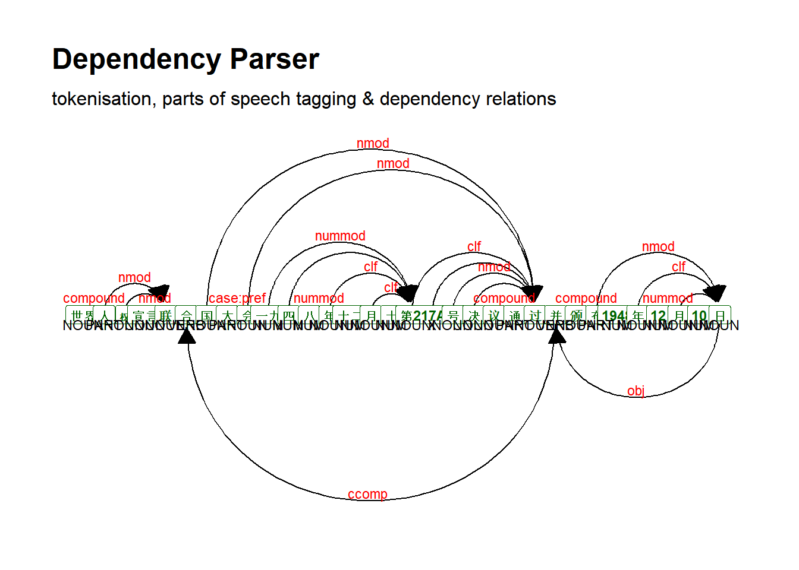
7.6.3.5.3.2 Czech
## parse text
dat_inaug_corpus_sent_czech <- udpipe_annotate(m_czech, x = dat_udhr_corpus[[2]]) %>%
as.data.frame()
## inspect
head(dat_inaug_corpus_sent_czech)## doc_id paragraph_id sentence_id
## 1 doc1 1 1
## 2 doc1 1 1
## 3 doc1 1 1
## 4 doc1 1 1
## 5 doc1 1 1
## 6 doc1 1 1
## sentence
## 1 VŠEOBECNÁ DEKLARACE LIDSKÝCH PRÁV Úvod U vědomí toho, že uznání přirozené důstojnosti a rovných a nezcizitelných práv členů lidské rodiny je základem svobody, spravedlnosti a míru ve světě, že zneuznání lidských práv a pohrdání jimi vedlo k barbarským činům, urážejícím svědomí lidstva, a že vybudování světa, ve kterém lidé, zbavení strachu a nouze, se budou těšiti svobodě projevu a přesvĕdčení, bylo prohlášeno za nejvyšší cíl lidu, že je nutné, aby lidská práva byla chránena zákonem, nemá-li být človĕk donucen uchylovat se, když vše ostatní selhalo, k odboji proti tyranii a útlaku, že je nutné podporovat rozvoj přátelských vztahu mezi národy, že lid Spojených národů zdůraznil v Chartě znovu svou víru v základní lidská práva, v důstojnost a hodnotu lidské osobnosti, v rovná práva mužů i žen a že se rozhodl podporovat sociální pokrok a vytvořit lepší životní podmínky ve větší svobodě, že členské státy převzaly závazek zajistit ve spolupráci s Organizací spojených národů všeobecné uznávání a zachovávání lidských práv a základních svobod a že stejné chápání těchto práv a svobod má nesmírný význam pro dokonalé splnění tohoto závazku, Valné shromáždění vyhlašuje tuto Všeobecnou deklaraci lidských práv jakožto společný cíl pro všechny národy a všechny státy za tím účelem, aby se každý jednotlivec a každý orgán společnosti, maje tuto deklaraci stále na mysli, snažil vyučováním a výchovou rozšířit úctu k těmto právům a svobodám azajistit postupnými opatřeními vnitrostátními i mezinárodními jejich všeobecné a účinné uznávání a zachovávání jak mezi lidem členských států samých, tak i mezi lidem území, jež jsou pod jejich pravomocí.
## 2 VŠEOBECNÁ DEKLARACE LIDSKÝCH PRÁV Úvod U vědomí toho, že uznání přirozené důstojnosti a rovných a nezcizitelných práv členů lidské rodiny je základem svobody, spravedlnosti a míru ve světě, že zneuznání lidských práv a pohrdání jimi vedlo k barbarským činům, urážejícím svědomí lidstva, a že vybudování světa, ve kterém lidé, zbavení strachu a nouze, se budou těšiti svobodě projevu a přesvĕdčení, bylo prohlášeno za nejvyšší cíl lidu, že je nutné, aby lidská práva byla chránena zákonem, nemá-li být človĕk donucen uchylovat se, když vše ostatní selhalo, k odboji proti tyranii a útlaku, že je nutné podporovat rozvoj přátelských vztahu mezi národy, že lid Spojených národů zdůraznil v Chartě znovu svou víru v základní lidská práva, v důstojnost a hodnotu lidské osobnosti, v rovná práva mužů i žen a že se rozhodl podporovat sociální pokrok a vytvořit lepší životní podmínky ve větší svobodě, že členské státy převzaly závazek zajistit ve spolupráci s Organizací spojených národů všeobecné uznávání a zachovávání lidských práv a základních svobod a že stejné chápání těchto práv a svobod má nesmírný význam pro dokonalé splnění tohoto závazku, Valné shromáždění vyhlašuje tuto Všeobecnou deklaraci lidských práv jakožto společný cíl pro všechny národy a všechny státy za tím účelem, aby se každý jednotlivec a každý orgán společnosti, maje tuto deklaraci stále na mysli, snažil vyučováním a výchovou rozšířit úctu k těmto právům a svobodám azajistit postupnými opatřeními vnitrostátními i mezinárodními jejich všeobecné a účinné uznávání a zachovávání jak mezi lidem členských států samých, tak i mezi lidem území, jež jsou pod jejich pravomocí.
## 3 VŠEOBECNÁ DEKLARACE LIDSKÝCH PRÁV Úvod U vědomí toho, že uznání přirozené důstojnosti a rovných a nezcizitelných práv členů lidské rodiny je základem svobody, spravedlnosti a míru ve světě, že zneuznání lidských práv a pohrdání jimi vedlo k barbarským činům, urážejícím svědomí lidstva, a že vybudování světa, ve kterém lidé, zbavení strachu a nouze, se budou těšiti svobodě projevu a přesvĕdčení, bylo prohlášeno za nejvyšší cíl lidu, že je nutné, aby lidská práva byla chránena zákonem, nemá-li být človĕk donucen uchylovat se, když vše ostatní selhalo, k odboji proti tyranii a útlaku, že je nutné podporovat rozvoj přátelských vztahu mezi národy, že lid Spojených národů zdůraznil v Chartě znovu svou víru v základní lidská práva, v důstojnost a hodnotu lidské osobnosti, v rovná práva mužů i žen a že se rozhodl podporovat sociální pokrok a vytvořit lepší životní podmínky ve větší svobodě, že členské státy převzaly závazek zajistit ve spolupráci s Organizací spojených národů všeobecné uznávání a zachovávání lidských práv a základních svobod a že stejné chápání těchto práv a svobod má nesmírný význam pro dokonalé splnění tohoto závazku, Valné shromáždění vyhlašuje tuto Všeobecnou deklaraci lidských práv jakožto společný cíl pro všechny národy a všechny státy za tím účelem, aby se každý jednotlivec a každý orgán společnosti, maje tuto deklaraci stále na mysli, snažil vyučováním a výchovou rozšířit úctu k těmto právům a svobodám azajistit postupnými opatřeními vnitrostátními i mezinárodními jejich všeobecné a účinné uznávání a zachovávání jak mezi lidem členských států samých, tak i mezi lidem území, jež jsou pod jejich pravomocí.
## 4 VŠEOBECNÁ DEKLARACE LIDSKÝCH PRÁV Úvod U vědomí toho, že uznání přirozené důstojnosti a rovných a nezcizitelných práv členů lidské rodiny je základem svobody, spravedlnosti a míru ve světě, že zneuznání lidských práv a pohrdání jimi vedlo k barbarským činům, urážejícím svědomí lidstva, a že vybudování světa, ve kterém lidé, zbavení strachu a nouze, se budou těšiti svobodě projevu a přesvĕdčení, bylo prohlášeno za nejvyšší cíl lidu, že je nutné, aby lidská práva byla chránena zákonem, nemá-li být človĕk donucen uchylovat se, když vše ostatní selhalo, k odboji proti tyranii a útlaku, že je nutné podporovat rozvoj přátelských vztahu mezi národy, že lid Spojených národů zdůraznil v Chartě znovu svou víru v základní lidská práva, v důstojnost a hodnotu lidské osobnosti, v rovná práva mužů i žen a že se rozhodl podporovat sociální pokrok a vytvořit lepší životní podmínky ve větší svobodě, že členské státy převzaly závazek zajistit ve spolupráci s Organizací spojených národů všeobecné uznávání a zachovávání lidských práv a základních svobod a že stejné chápání těchto práv a svobod má nesmírný význam pro dokonalé splnění tohoto závazku, Valné shromáždění vyhlašuje tuto Všeobecnou deklaraci lidských práv jakožto společný cíl pro všechny národy a všechny státy za tím účelem, aby se každý jednotlivec a každý orgán společnosti, maje tuto deklaraci stále na mysli, snažil vyučováním a výchovou rozšířit úctu k těmto právům a svobodám azajistit postupnými opatřeními vnitrostátními i mezinárodními jejich všeobecné a účinné uznávání a zachovávání jak mezi lidem členských států samých, tak i mezi lidem území, jež jsou pod jejich pravomocí.
## 5 VŠEOBECNÁ DEKLARACE LIDSKÝCH PRÁV Úvod U vědomí toho, že uznání přirozené důstojnosti a rovných a nezcizitelných práv členů lidské rodiny je základem svobody, spravedlnosti a míru ve světě, že zneuznání lidských práv a pohrdání jimi vedlo k barbarským činům, urážejícím svědomí lidstva, a že vybudování světa, ve kterém lidé, zbavení strachu a nouze, se budou těšiti svobodě projevu a přesvĕdčení, bylo prohlášeno za nejvyšší cíl lidu, že je nutné, aby lidská práva byla chránena zákonem, nemá-li být človĕk donucen uchylovat se, když vše ostatní selhalo, k odboji proti tyranii a útlaku, že je nutné podporovat rozvoj přátelských vztahu mezi národy, že lid Spojených národů zdůraznil v Chartě znovu svou víru v základní lidská práva, v důstojnost a hodnotu lidské osobnosti, v rovná práva mužů i žen a že se rozhodl podporovat sociální pokrok a vytvořit lepší životní podmínky ve větší svobodě, že členské státy převzaly závazek zajistit ve spolupráci s Organizací spojených národů všeobecné uznávání a zachovávání lidských práv a základních svobod a že stejné chápání těchto práv a svobod má nesmírný význam pro dokonalé splnění tohoto závazku, Valné shromáždění vyhlašuje tuto Všeobecnou deklaraci lidských práv jakožto společný cíl pro všechny národy a všechny státy za tím účelem, aby se každý jednotlivec a každý orgán společnosti, maje tuto deklaraci stále na mysli, snažil vyučováním a výchovou rozšířit úctu k těmto právům a svobodám azajistit postupnými opatřeními vnitrostátními i mezinárodními jejich všeobecné a účinné uznávání a zachovávání jak mezi lidem členských států samých, tak i mezi lidem území, jež jsou pod jejich pravomocí.
## 6 VŠEOBECNÁ DEKLARACE LIDSKÝCH PRÁV Úvod U vědomí toho, že uznání přirozené důstojnosti a rovných a nezcizitelných práv členů lidské rodiny je základem svobody, spravedlnosti a míru ve světě, že zneuznání lidských práv a pohrdání jimi vedlo k barbarským činům, urážejícím svědomí lidstva, a že vybudování světa, ve kterém lidé, zbavení strachu a nouze, se budou těšiti svobodě projevu a přesvĕdčení, bylo prohlášeno za nejvyšší cíl lidu, že je nutné, aby lidská práva byla chránena zákonem, nemá-li být človĕk donucen uchylovat se, když vše ostatní selhalo, k odboji proti tyranii a útlaku, že je nutné podporovat rozvoj přátelských vztahu mezi národy, že lid Spojených národů zdůraznil v Chartě znovu svou víru v základní lidská práva, v důstojnost a hodnotu lidské osobnosti, v rovná práva mužů i žen a že se rozhodl podporovat sociální pokrok a vytvořit lepší životní podmínky ve větší svobodě, že členské státy převzaly závazek zajistit ve spolupráci s Organizací spojených národů všeobecné uznávání a zachovávání lidských práv a základních svobod a že stejné chápání těchto práv a svobod má nesmírný význam pro dokonalé splnění tohoto závazku, Valné shromáždění vyhlašuje tuto Všeobecnou deklaraci lidských práv jakožto společný cíl pro všechny národy a všechny státy za tím účelem, aby se každý jednotlivec a každý orgán společnosti, maje tuto deklaraci stále na mysli, snažil vyučováním a výchovou rozšířit úctu k těmto právům a svobodám azajistit postupnými opatřeními vnitrostátními i mezinárodními jejich všeobecné a účinné uznávání a zachovávání jak mezi lidem členských států samých, tak i mezi lidem území, jež jsou pod jejich pravomocí.
## token_id token lemma upos xpos
## 1 1 VŠEOBECNÁ Všeobecná NOUN NNFS1-----A----
## 2 2 DEKLAR DEKLAR PROPN NNFXX-----A---8
## 3 3 ACE ACE PROPN NNFP1-----A----
## 4 4 LIDSKÝCH lidský ADJ AAFP2----1A----
## 5 5 PRÁV práv ADJ AUIS1M---------
## 6 6 Úvod úvod NOUN NNIS1-----A----
## feats
## 1 Case=Nom|Gender=Fem|Number=Sing|Polarity=Pos
## 2 Abbr=Yes|Gender=Fem|NameType=Geo|Polarity=Pos
## 3 Case=Nom|Gender=Fem|NameType=Geo|Number=Plur|Polarity=Pos
## 4 Case=Gen|Degree=Pos|Gender=Fem|NameType=Geo|Number=Plur|Polarity=Pos
## 5 Animacy=Inan|Case=Nom|Gender=Masc|Gender[psor]=Masc|NameType=Sur|Number=Sing|Poss=Yes
## 6 Animacy=Inan|Case=Nom|Gender=Masc|Number=Sing|Polarity=Pos
## head_token_id dep_rel deps misc
## 1 0 root <NA> <NA>
## 2 1 nmod <NA> SpaceAfter=No
## 3 2 flat <NA> <NA>
## 4 6 amod <NA> <NA>
## 5 6 amod <NA> SpacesAfter=\\n
## 6 1 nmod <NA> <NA>dat_inaug_corpus_sent_czech_short <- dat_inaug_corpus_sent_czech[1:9,]
dat_inaug_corpus_sent_dplot_czech <- textplot_dependencyparser(dat_inaug_corpus_sent_czech_short, size = 3)
## show plot
dat_inaug_corpus_sent_dplot_czech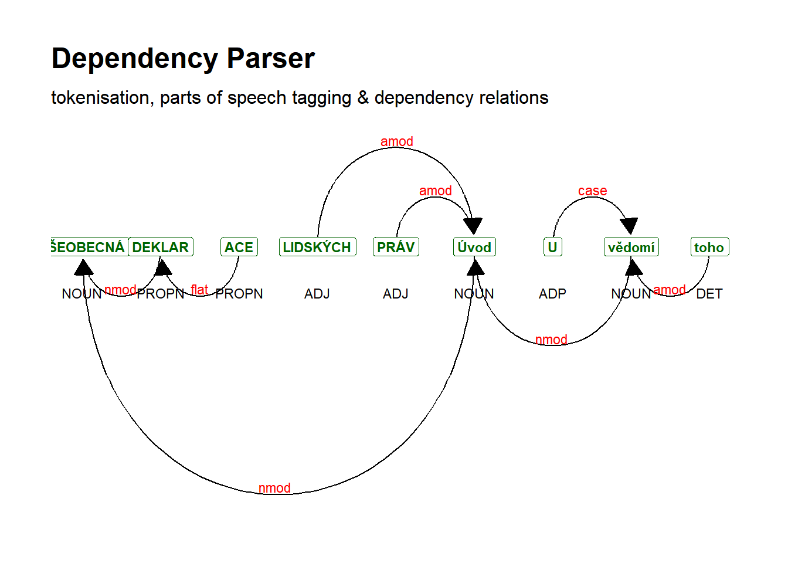
7.6.3.5.3.3 Danish
## parse text
dat_inaug_corpus_sent_danish <- udpipe_annotate(m_danish, x = dat_udhr_corpus[[3]]) %>%
as.data.frame()
## inspect
head(dat_inaug_corpus_sent_danish)## doc_id paragraph_id sentence_id
## 1 doc1 1 1
## 2 doc1 1 1
## 3 doc1 1 1
## 4 doc1 1 1
## 5 doc1 1 1
## 6 doc1 1 1
## sentence
## 1 Den 10. december 1948 vedtog og offentliggjorde FNs tredie generalforsamling Verdenserklæringen om Menneskerettighederne.
## 2 Den 10. december 1948 vedtog og offentliggjorde FNs tredie generalforsamling Verdenserklæringen om Menneskerettighederne.
## 3 Den 10. december 1948 vedtog og offentliggjorde FNs tredie generalforsamling Verdenserklæringen om Menneskerettighederne.
## 4 Den 10. december 1948 vedtog og offentliggjorde FNs tredie generalforsamling Verdenserklæringen om Menneskerettighederne.
## 5 Den 10. december 1948 vedtog og offentliggjorde FNs tredie generalforsamling Verdenserklæringen om Menneskerettighederne.
## 6 Den 10. december 1948 vedtog og offentliggjorde FNs tredie generalforsamling Verdenserklæringen om Menneskerettighederne.
## token_id token lemma upos xpos feats
## 1 1 Den den DET <NA> Gender=Com|Number=Sing|PronType=Dem
## 2 2 10. 10. ADJ <NA> NumType=Ord
## 3 3 december december NOUN <NA> Definite=Ind|Gender=Com|Number=Sing
## 4 4 1948 1948 NUM <NA> NumType=Card
## 5 5 vedtog vedtog NOUN <NA> Definite=Ind|Gender=Neut|Number=Plur
## 6 6 og og CCONJ <NA> <NA>
## head_token_id dep_rel deps misc
## 1 3 det <NA> <NA>
## 2 3 amod <NA> <NA>
## 3 7 nsubj <NA> <NA>
## 4 5 nummod <NA> <NA>
## 5 3 nmod <NA> <NA>
## 6 3 dep <NA> <NA>dat_inaug_corpus_sent_danish_short <- dat_inaug_corpus_sent_danish[1:14,]
dat_inaug_corpus_sent_dplot_danish <- textplot_dependencyparser(dat_inaug_corpus_sent_danish_short, size = 3)
## show plot
dat_inaug_corpus_sent_dplot_danish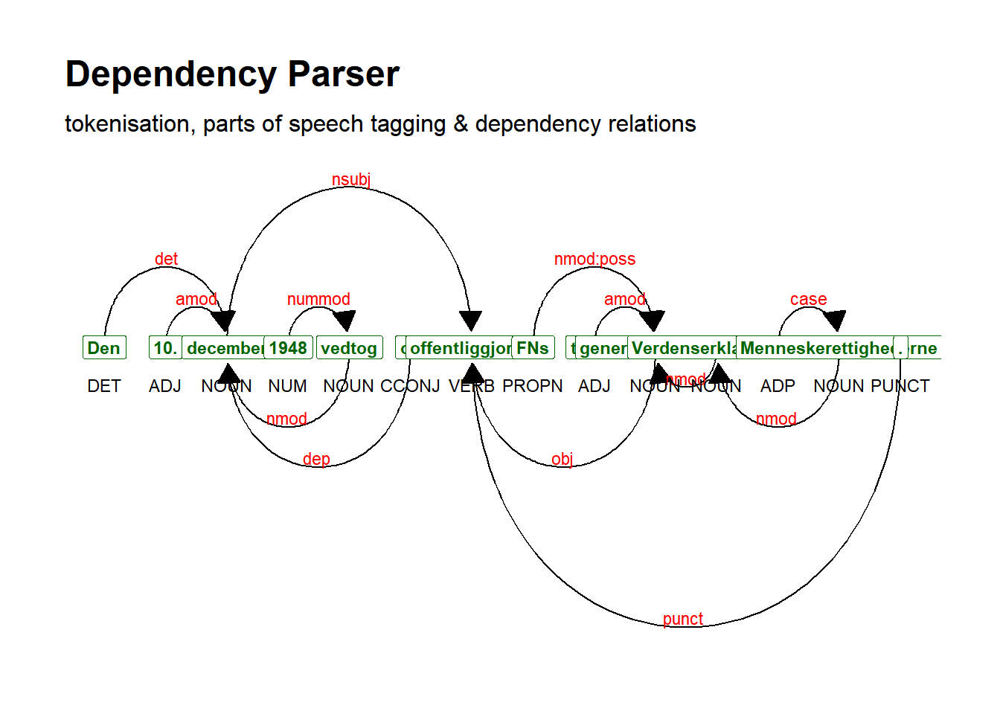
7.6.3.5.3.4 English
## parse text
dat_udhr_corpus_english <- dat_udhr_corpus[[4]]
dat_udhr_corpus_english_short <- str_extract(dat_udhr_corpus_english, "Whereas recognition of the inherent dignity and of the equal and inalienable rights of all members of the human family is the foundation of freedom, justice and peace in the world")
dat_inaug_corpus_sent_english <- udpipe_annotate(m_english, x = dat_udhr_corpus_english_short) %>%
as.data.frame()
## inspect
head(dat_inaug_corpus_sent_english)## doc_id paragraph_id sentence_id
## 1 doc1 1 1
## 2 doc1 1 1
## 3 doc1 1 1
## 4 doc1 1 1
## 5 doc1 1 1
## 6 doc1 1 1
## sentence
## 1 Whereas recognition of the inherent dignity and of the equal and inalienable rights of all members of the human family is the foundation of freedom, justice and peace in the world
## 2 Whereas recognition of the inherent dignity and of the equal and inalienable rights of all members of the human family is the foundation of freedom, justice and peace in the world
## 3 Whereas recognition of the inherent dignity and of the equal and inalienable rights of all members of the human family is the foundation of freedom, justice and peace in the world
## 4 Whereas recognition of the inherent dignity and of the equal and inalienable rights of all members of the human family is the foundation of freedom, justice and peace in the world
## 5 Whereas recognition of the inherent dignity and of the equal and inalienable rights of all members of the human family is the foundation of freedom, justice and peace in the world
## 6 Whereas recognition of the inherent dignity and of the equal and inalienable rights of all members of the human family is the foundation of freedom, justice and peace in the world
## token_id token lemma upos xpos feats
## 1 1 Whereas whereas ADJ JJ Degree=Pos
## 2 2 recognition recognition NOUN NN Number=Sing
## 3 3 of of ADP IN <NA>
## 4 4 the the DET DT Definite=Def|PronType=Art
## 5 5 inherent inherent ADJ JJ Degree=Pos
## 6 6 dignity dignity NOUN NN Number=Sing
## head_token_id dep_rel deps misc
## 1 2 amod <NA> <NA>
## 2 23 nsubj <NA> <NA>
## 3 6 case <NA> <NA>
## 4 6 det <NA> <NA>
## 5 6 amod <NA> <NA>
## 6 2 nmod <NA> <NA>dat_inaug_corpus_sent_dplot_english <- textplot_dependencyparser(dat_inaug_corpus_sent_english, size = 3)
## show plot
dat_inaug_corpus_sent_dplot_english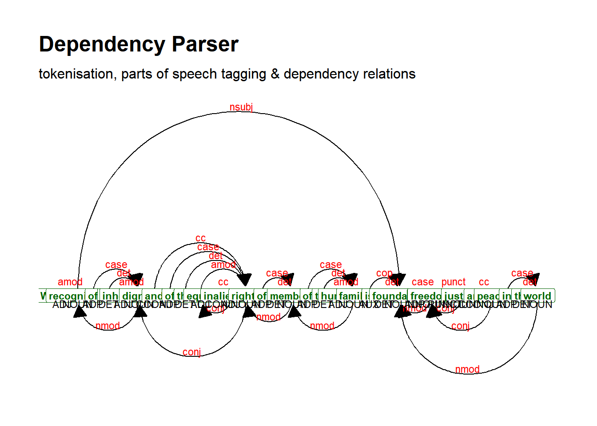
7.6.3.5.3.5 French
## parse text
dat_udhr_corpus_french <- dat_udhr_corpus[[5]]
dat_udhr_corpus_french_short <- str_extract(dat_udhr_corpus_french, "Considérant que la reconnaissance de la dignité inhérente à tous les membres de la famille humaine et de leurs droits égaux et inaliénables constitue le fondement de la liberté, de la justice et de la paix dans le monde")
dat_inaug_corpus_sent_french <- udpipe_annotate(m_french, x = dat_udhr_corpus_french_short) %>%
as.data.frame()
## inspect
head(dat_inaug_corpus_sent_french)## doc_id paragraph_id sentence_id
## 1 doc1 1 1
## 2 doc1 1 1
## 3 doc1 1 1
## 4 doc1 1 1
## 5 doc1 1 1
## 6 doc1 1 1
## sentence
## 1 Considérant que la reconnaissance de la dignité inhérente à tous les membres de la famille humaine et de leurs droits égaux et inaliénables constitue le fondement de la liberté, de la justice et de la paix dans le monde
## 2 Considérant que la reconnaissance de la dignité inhérente à tous les membres de la famille humaine et de leurs droits égaux et inaliénables constitue le fondement de la liberté, de la justice et de la paix dans le monde
## 3 Considérant que la reconnaissance de la dignité inhérente à tous les membres de la famille humaine et de leurs droits égaux et inaliénables constitue le fondement de la liberté, de la justice et de la paix dans le monde
## 4 Considérant que la reconnaissance de la dignité inhérente à tous les membres de la famille humaine et de leurs droits égaux et inaliénables constitue le fondement de la liberté, de la justice et de la paix dans le monde
## 5 Considérant que la reconnaissance de la dignité inhérente à tous les membres de la famille humaine et de leurs droits égaux et inaliénables constitue le fondement de la liberté, de la justice et de la paix dans le monde
## 6 Considérant que la reconnaissance de la dignité inhérente à tous les membres de la famille humaine et de leurs droits égaux et inaliénables constitue le fondement de la liberté, de la justice et de la paix dans le monde
## token_id token lemma upos xpos
## 1 1 Considérant considérer VERB V
## 2 2 que que SCONJ CS
## 3 3 la le DET RD
## 4 4 reconnaissance reconnaissance NOUN S
## 5 5 de de ADP E
## 6 6 la le DET RD
## feats head_token_id dep_rel deps
## 1 VerbForm=Ger 0 root <NA>
## 2 <NA> 24 mark <NA>
## 3 Definite=Def|Gender=Fem|Number=Sing|PronType=Art 4 det <NA>
## 4 Gender=Fem|Number=Sing 24 nsubj <NA>
## 5 <NA> 7 case <NA>
## 6 Definite=Def|Gender=Fem|Number=Sing|PronType=Art 7 det <NA>
## misc
## 1 <NA>
## 2 <NA>
## 3 <NA>
## 4 <NA>
## 5 <NA>
## 6 <NA>dat_inaug_corpus_sent_dplot_french <- textplot_dependencyparser(dat_inaug_corpus_sent_french, size = 3)
## show plot
dat_inaug_corpus_sent_dplot_french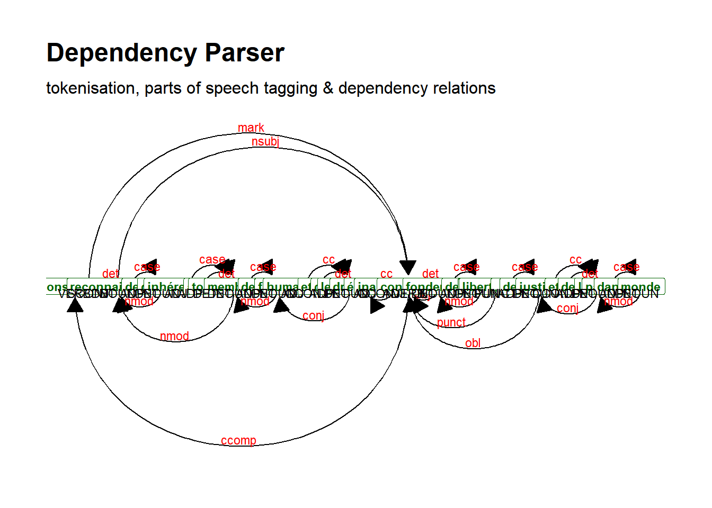
7.6.3.5.3.6 Greek
## parse text
dat_inaug_corpus_sent_greek <- udpipe_annotate(m_greek, x = dat_udhr_corpus[[7]]) %>%
as.data.frame()
## inspect
head(dat_inaug_corpus_sent_greek)## doc_id paragraph_id sentence_id
## 1 doc1 1 1
## 2 doc1 1 1
## 3 doc1 1 1
## 4 doc1 1 2
## 5 doc1 1 2
## 6 doc1 1 2
## sentence
## 1 ΟΙΚΟΥΜΕΝΙΚΗ ΔΙΑΚΗΡΥΞΗ ΓΙΑ
## 2 ΟΙΚΟΥΜΕΝΙΚΗ ΔΙΑΚΗΡΥΞΗ ΓΙΑ
## 3 ΟΙΚΟΥΜΕΝΙΚΗ ΔΙΑΚΗΡΥΞΗ ΓΙΑ
## 4 ΤΑ ΑΝΘΡΩΠΙΝΑ ΔΙΚΑΙΩΜΑΤΑ 10 ΔΕΚΕΜΒΡΙΟΥ 1948 ΠΡΟΟΙΜΙΟ Επειδή η αναγνώριση της αξιοπρέπειας, που είναι σύμφυτη σε όλα τα μέλη της ανθρώπινης οικογένειας, καθώς και των ίσων και αναπαλλοτρίωτων δικαιωμάτων τους αποτελεί το θεμέλιο της ελευθερίας, της δικαιοσύνης και της ειρήνης στον κόσμο.
## 5 ΤΑ ΑΝΘΡΩΠΙΝΑ ΔΙΚΑΙΩΜΑΤΑ 10 ΔΕΚΕΜΒΡΙΟΥ 1948 ΠΡΟΟΙΜΙΟ Επειδή η αναγνώριση της αξιοπρέπειας, που είναι σύμφυτη σε όλα τα μέλη της ανθρώπινης οικογένειας, καθώς και των ίσων και αναπαλλοτρίωτων δικαιωμάτων τους αποτελεί το θεμέλιο της ελευθερίας, της δικαιοσύνης και της ειρήνης στον κόσμο.
## 6 ΤΑ ΑΝΘΡΩΠΙΝΑ ΔΙΚΑΙΩΜΑΤΑ 10 ΔΕΚΕΜΒΡΙΟΥ 1948 ΠΡΟΟΙΜΙΟ Επειδή η αναγνώριση της αξιοπρέπειας, που είναι σύμφυτη σε όλα τα μέλη της ανθρώπινης οικογένειας, καθώς και των ίσων και αναπαλλοτρίωτων δικαιωμάτων τους αποτελεί το θεμέλιο της ελευθερίας, της δικαιοσύνης και της ειρήνης στον κόσμο.
## token_id token lemma upos xpos
## 1 1 ΟΙΚΟΥΜΕΝΙΚΗ Οικουμενικος DET DET
## 2 2 ΔΙΑΚΗΡΥΞΗ Διακηρυξος ADJ ADJ
## 3 3 ΓΙΑ για NOUN NOUN
## 4 1 ΤΑ ο DET DET
## 5 2 ΑΝΘΡΩΠΙΝΑ Ανθρωπινος ADJ ADJ
## 6 3 ΔΙΚΑΙΩΜΑΤΑ ΔΙΚΑΙΩΜΑΤΑ NOUN NOUN
## feats head_token_id
## 1 Case=Nom|Definite=Def|Gender=Fem|Number=Sing|PronType=Art 3
## 2 Case=Nom|Gender=Fem|Number=Sing 3
## 3 Case=Nom|Gender=Fem|Number=Sing 0
## 4 Case=Nom|Definite=Def|Gender=Neut|Number=Plur|PronType=Art 3
## 5 Case=Nom|Gender=Neut|Number=Plur 3
## 6 Case=Nom|Gender=Neut|Number=Plur 0
## dep_rel deps misc
## 1 det <NA> <NA>
## 2 amod <NA> <NA>
## 3 root <NA> <NA>
## 4 det <NA> <NA>
## 5 amod <NA> <NA>
## 6 root <NA> SpacesAfter=\\ndat_inaug_corpus_sent_greek_short <- dat_inaug_corpus_sent_greek[4:51,]
dat_inaug_corpus_sent_dplot_greek <- textplot_dependencyparser(dat_inaug_corpus_sent_greek_short, size = 3)
## show plot
dat_inaug_corpus_sent_dplot_greek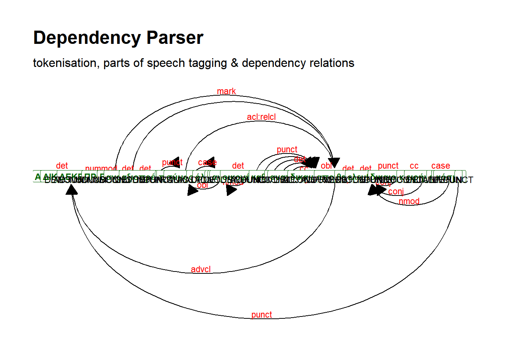
7.6.3.5.3.7 Hungarian
## parse text
dat_inaug_corpus_sent_hungarian <- udpipe_annotate(m_hungarian, x = dat_udhr_corpus[[8]]) %>%
as.data.frame()
## inspect
head(dat_inaug_corpus_sent_hungarian)## doc_id paragraph_id sentence_id
## 1 doc1 1 1
## 2 doc1 1 1
## 3 doc1 1 1
## 4 doc1 1 1
## 5 doc1 1 1
## 6 doc1 1 1
## sentence
## 1 Az Emberi Jogok Egyetemes Nyilatkozata Bevezető Tekintettel arra, hogy az emberiség családja minden egyes tagja méltóságának, valamint egyenlő és elidegeníthetetlen jogainak elismerése alkotja a szabadság, az igazság és a béke alapját a világon, Tekintettel arra, hogy az emberi jogok el nem ismerése és semmibevevése az emberiség lelkiismeretét fellázító barbár cselekményekhez vezetett, és hogy az ember legfőbb vágya egy olyan világ eljövetele, amelyben az elnyomástól, valamint a nyomortól megszabadult emberi lények szava és meggyőződése szabad lesz, Tekintettel annak fontosságára, hogy az emberi jogokat a jog uralma védelmezze, nehogy az ember végső szükségében a zsarnokság és az elnyomás elleni lázadásra kényszerüljön, Tekintettel arra, hogy igen lényeges a nemzetek közötti baráti kapcsolatok kifejeződésének előmozdítása, Tekintettel arra, hogy az Alapokmányban az Egyesült Nemzetek népei újból hitet tettek az alapvető emberi jogok, az emberi személyiség méltósága és értéke, a férfiak és nők egyenjogúsága mellett, valamint kinyilvánították azt az elhatározásukat, hogy elősegítik a szociális haladást és nagyobb szabadság mellett jobb életfeltételeket valósítanak meg, Tekintettel arra, hogy a tagállamok kötelezték magukat arra, hogy az Egyesült Nemzetek Szervezetével együttműködve biztosítják az emberi jogok és alapvető szabadságok általános és tényleges tiszteletbentartását, Tekintettel arra, hogy a jogok és szabadságok mibenléte tekintetében közös felfogás kialakításának a legnagyobb jelentősége van az említett kötelezettség maradéktalan teljesítésének szempontjából a közgyűlés kinyilvánítja az emberi jogok egyetemleges nyilatkozatát mint azt a közös eszményt, amelynek elérésére minden népnek és minden nemzetnek törekednie kell abból a célból, hogy minden személy és a társadalom minden szerve, állandóan szem előtt tartva a jelen Nyilatkozatot, oktatás és nevelés útján előmozdítsa e jogok és szabadságok tiszteletbentartásának kifejlesztését, valamint azoknak fokozatosan megvalósuló hazai és nemzetközi jogszabályok útján történő
## 2 Az Emberi Jogok Egyetemes Nyilatkozata Bevezető Tekintettel arra, hogy az emberiség családja minden egyes tagja méltóságának, valamint egyenlő és elidegeníthetetlen jogainak elismerése alkotja a szabadság, az igazság és a béke alapját a világon, Tekintettel arra, hogy az emberi jogok el nem ismerése és semmibevevése az emberiség lelkiismeretét fellázító barbár cselekményekhez vezetett, és hogy az ember legfőbb vágya egy olyan világ eljövetele, amelyben az elnyomástól, valamint a nyomortól megszabadult emberi lények szava és meggyőződése szabad lesz, Tekintettel annak fontosságára, hogy az emberi jogokat a jog uralma védelmezze, nehogy az ember végső szükségében a zsarnokság és az elnyomás elleni lázadásra kényszerüljön, Tekintettel arra, hogy igen lényeges a nemzetek közötti baráti kapcsolatok kifejeződésének előmozdítása, Tekintettel arra, hogy az Alapokmányban az Egyesült Nemzetek népei újból hitet tettek az alapvető emberi jogok, az emberi személyiség méltósága és értéke, a férfiak és nők egyenjogúsága mellett, valamint kinyilvánították azt az elhatározásukat, hogy elősegítik a szociális haladást és nagyobb szabadság mellett jobb életfeltételeket valósítanak meg, Tekintettel arra, hogy a tagállamok kötelezték magukat arra, hogy az Egyesült Nemzetek Szervezetével együttműködve biztosítják az emberi jogok és alapvető szabadságok általános és tényleges tiszteletbentartását, Tekintettel arra, hogy a jogok és szabadságok mibenléte tekintetében közös felfogás kialakításának a legnagyobb jelentősége van az említett kötelezettség maradéktalan teljesítésének szempontjából a közgyűlés kinyilvánítja az emberi jogok egyetemleges nyilatkozatát mint azt a közös eszményt, amelynek elérésére minden népnek és minden nemzetnek törekednie kell abból a célból, hogy minden személy és a társadalom minden szerve, állandóan szem előtt tartva a jelen Nyilatkozatot, oktatás és nevelés útján előmozdítsa e jogok és szabadságok tiszteletbentartásának kifejlesztését, valamint azoknak fokozatosan megvalósuló hazai és nemzetközi jogszabályok útján történő
## 3 Az Emberi Jogok Egyetemes Nyilatkozata Bevezető Tekintettel arra, hogy az emberiség családja minden egyes tagja méltóságának, valamint egyenlő és elidegeníthetetlen jogainak elismerése alkotja a szabadság, az igazság és a béke alapját a világon, Tekintettel arra, hogy az emberi jogok el nem ismerése és semmibevevése az emberiség lelkiismeretét fellázító barbár cselekményekhez vezetett, és hogy az ember legfőbb vágya egy olyan világ eljövetele, amelyben az elnyomástól, valamint a nyomortól megszabadult emberi lények szava és meggyőződése szabad lesz, Tekintettel annak fontosságára, hogy az emberi jogokat a jog uralma védelmezze, nehogy az ember végső szükségében a zsarnokság és az elnyomás elleni lázadásra kényszerüljön, Tekintettel arra, hogy igen lényeges a nemzetek közötti baráti kapcsolatok kifejeződésének előmozdítása, Tekintettel arra, hogy az Alapokmányban az Egyesült Nemzetek népei újból hitet tettek az alapvető emberi jogok, az emberi személyiség méltósága és értéke, a férfiak és nők egyenjogúsága mellett, valamint kinyilvánították azt az elhatározásukat, hogy elősegítik a szociális haladást és nagyobb szabadság mellett jobb életfeltételeket valósítanak meg, Tekintettel arra, hogy a tagállamok kötelezték magukat arra, hogy az Egyesült Nemzetek Szervezetével együttműködve biztosítják az emberi jogok és alapvető szabadságok általános és tényleges tiszteletbentartását, Tekintettel arra, hogy a jogok és szabadságok mibenléte tekintetében közös felfogás kialakításának a legnagyobb jelentősége van az említett kötelezettség maradéktalan teljesítésének szempontjából a közgyűlés kinyilvánítja az emberi jogok egyetemleges nyilatkozatát mint azt a közös eszményt, amelynek elérésére minden népnek és minden nemzetnek törekednie kell abból a célból, hogy minden személy és a társadalom minden szerve, állandóan szem előtt tartva a jelen Nyilatkozatot, oktatás és nevelés útján előmozdítsa e jogok és szabadságok tiszteletbentartásának kifejlesztését, valamint azoknak fokozatosan megvalósuló hazai és nemzetközi jogszabályok útján történő
## 4 Az Emberi Jogok Egyetemes Nyilatkozata Bevezető Tekintettel arra, hogy az emberiség családja minden egyes tagja méltóságának, valamint egyenlő és elidegeníthetetlen jogainak elismerése alkotja a szabadság, az igazság és a béke alapját a világon, Tekintettel arra, hogy az emberi jogok el nem ismerése és semmibevevése az emberiség lelkiismeretét fellázító barbár cselekményekhez vezetett, és hogy az ember legfőbb vágya egy olyan világ eljövetele, amelyben az elnyomástól, valamint a nyomortól megszabadult emberi lények szava és meggyőződése szabad lesz, Tekintettel annak fontosságára, hogy az emberi jogokat a jog uralma védelmezze, nehogy az ember végső szükségében a zsarnokság és az elnyomás elleni lázadásra kényszerüljön, Tekintettel arra, hogy igen lényeges a nemzetek közötti baráti kapcsolatok kifejeződésének előmozdítása, Tekintettel arra, hogy az Alapokmányban az Egyesült Nemzetek népei újból hitet tettek az alapvető emberi jogok, az emberi személyiség méltósága és értéke, a férfiak és nők egyenjogúsága mellett, valamint kinyilvánították azt az elhatározásukat, hogy elősegítik a szociális haladást és nagyobb szabadság mellett jobb életfeltételeket valósítanak meg, Tekintettel arra, hogy a tagállamok kötelezték magukat arra, hogy az Egyesült Nemzetek Szervezetével együttműködve biztosítják az emberi jogok és alapvető szabadságok általános és tényleges tiszteletbentartását, Tekintettel arra, hogy a jogok és szabadságok mibenléte tekintetében közös felfogás kialakításának a legnagyobb jelentősége van az említett kötelezettség maradéktalan teljesítésének szempontjából a közgyűlés kinyilvánítja az emberi jogok egyetemleges nyilatkozatát mint azt a közös eszményt, amelynek elérésére minden népnek és minden nemzetnek törekednie kell abból a célból, hogy minden személy és a társadalom minden szerve, állandóan szem előtt tartva a jelen Nyilatkozatot, oktatás és nevelés útján előmozdítsa e jogok és szabadságok tiszteletbentartásának kifejlesztését, valamint azoknak fokozatosan megvalósuló hazai és nemzetközi jogszabályok útján történő
## 5 Az Emberi Jogok Egyetemes Nyilatkozata Bevezető Tekintettel arra, hogy az emberiség családja minden egyes tagja méltóságának, valamint egyenlő és elidegeníthetetlen jogainak elismerése alkotja a szabadság, az igazság és a béke alapját a világon, Tekintettel arra, hogy az emberi jogok el nem ismerése és semmibevevése az emberiség lelkiismeretét fellázító barbár cselekményekhez vezetett, és hogy az ember legfőbb vágya egy olyan világ eljövetele, amelyben az elnyomástól, valamint a nyomortól megszabadult emberi lények szava és meggyőződése szabad lesz, Tekintettel annak fontosságára, hogy az emberi jogokat a jog uralma védelmezze, nehogy az ember végső szükségében a zsarnokság és az elnyomás elleni lázadásra kényszerüljön, Tekintettel arra, hogy igen lényeges a nemzetek közötti baráti kapcsolatok kifejeződésének előmozdítása, Tekintettel arra, hogy az Alapokmányban az Egyesült Nemzetek népei újból hitet tettek az alapvető emberi jogok, az emberi személyiség méltósága és értéke, a férfiak és nők egyenjogúsága mellett, valamint kinyilvánították azt az elhatározásukat, hogy elősegítik a szociális haladást és nagyobb szabadság mellett jobb életfeltételeket valósítanak meg, Tekintettel arra, hogy a tagállamok kötelezték magukat arra, hogy az Egyesült Nemzetek Szervezetével együttműködve biztosítják az emberi jogok és alapvető szabadságok általános és tényleges tiszteletbentartását, Tekintettel arra, hogy a jogok és szabadságok mibenléte tekintetében közös felfogás kialakításának a legnagyobb jelentősége van az említett kötelezettség maradéktalan teljesítésének szempontjából a közgyűlés kinyilvánítja az emberi jogok egyetemleges nyilatkozatát mint azt a közös eszményt, amelynek elérésére minden népnek és minden nemzetnek törekednie kell abból a célból, hogy minden személy és a társadalom minden szerve, állandóan szem előtt tartva a jelen Nyilatkozatot, oktatás és nevelés útján előmozdítsa e jogok és szabadságok tiszteletbentartásának kifejlesztését, valamint azoknak fokozatosan megvalósuló hazai és nemzetközi jogszabályok útján történő
## 6 Az Emberi Jogok Egyetemes Nyilatkozata Bevezető Tekintettel arra, hogy az emberiség családja minden egyes tagja méltóságának, valamint egyenlő és elidegeníthetetlen jogainak elismerése alkotja a szabadság, az igazság és a béke alapját a világon, Tekintettel arra, hogy az emberi jogok el nem ismerése és semmibevevése az emberiség lelkiismeretét fellázító barbár cselekményekhez vezetett, és hogy az ember legfőbb vágya egy olyan világ eljövetele, amelyben az elnyomástól, valamint a nyomortól megszabadult emberi lények szava és meggyőződése szabad lesz, Tekintettel annak fontosságára, hogy az emberi jogokat a jog uralma védelmezze, nehogy az ember végső szükségében a zsarnokság és az elnyomás elleni lázadásra kényszerüljön, Tekintettel arra, hogy igen lényeges a nemzetek közötti baráti kapcsolatok kifejeződésének előmozdítása, Tekintettel arra, hogy az Alapokmányban az Egyesült Nemzetek népei újból hitet tettek az alapvető emberi jogok, az emberi személyiség méltósága és értéke, a férfiak és nők egyenjogúsága mellett, valamint kinyilvánították azt az elhatározásukat, hogy elősegítik a szociális haladást és nagyobb szabadság mellett jobb életfeltételeket valósítanak meg, Tekintettel arra, hogy a tagállamok kötelezték magukat arra, hogy az Egyesült Nemzetek Szervezetével együttműködve biztosítják az emberi jogok és alapvető szabadságok általános és tényleges tiszteletbentartását, Tekintettel arra, hogy a jogok és szabadságok mibenléte tekintetében közös felfogás kialakításának a legnagyobb jelentősége van az említett kötelezettség maradéktalan teljesítésének szempontjából a közgyűlés kinyilvánítja az emberi jogok egyetemleges nyilatkozatát mint azt a közös eszményt, amelynek elérésére minden népnek és minden nemzetnek törekednie kell abból a célból, hogy minden személy és a társadalom minden szerve, állandóan szem előtt tartva a jelen Nyilatkozatot, oktatás és nevelés útján előmozdítsa e jogok és szabadságok tiszteletbentartásának kifejlesztését, valamint azoknak fokozatosan megvalósuló hazai és nemzetközi jogszabályok útján történő
## token_id token lemma upos xpos
## 1 1 Az a DET <NA>
## 2 2 Emberi emberi PROPN <NA>
## 3 3 Jogok Jogok PROPN <NA>
## 4 4 Egyetemes Egyetemes PROPN <NA>
## 5 5 Nyilatkozata nyilatkozata PROPN <NA>
## 6 6 Bevezető Bevezető PROPN <NA>
## feats
## 1 Definite=Def|PronType=Art
## 2 Case=Nom|Number=Sing|Number[psed]=None|Number[psor]=None|Person[psor]=None
## 3 Case=Nom|Number=Sing|Number[psed]=None|Number[psor]=None|Person[psor]=None
## 4 Case=Nom|Number=Sing|Number[psed]=None|Number[psor]=None|Person[psor]=None
## 5 Case=Nom|Number=Sing|Number[psed]=None|Number[psor]=None|Person[psor]=None
## 6 Case=Nom|Number=Sing|Number[psed]=None|Number[psor]=None|Person[psor]=None
## head_token_id dep_rel deps misc
## 1 2 det <NA> <NA>
## 2 8 nmod:att <NA> <NA>
## 3 2 flat:name <NA> <NA>
## 4 2 flat:name <NA> <NA>
## 5 2 flat:name <NA> SpacesAfter=\\n
## 6 2 flat:name <NA> <NA>dat_inaug_corpus_sent_hungarian_short <- dat_inaug_corpus_sent_hungarian[1:36,]
dat_inaug_corpus_sent_dplot_hungarian <- textplot_dependencyparser(dat_inaug_corpus_sent_hungarian_short, size = 3)
## show plot
dat_inaug_corpus_sent_dplot_hungarian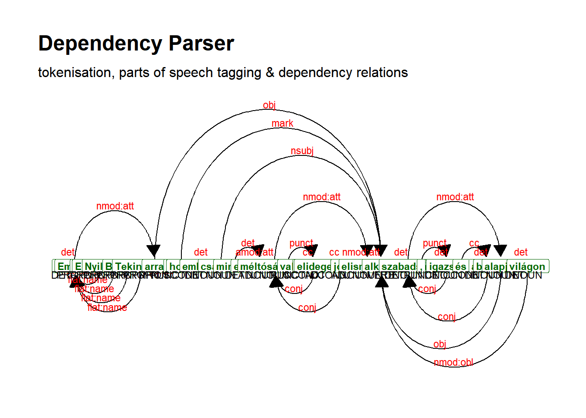
7.6.3.5.3.8 Irish
## parse text
dat_inaug_corpus_sent_irish <- udpipe_annotate(m_irish, x = dat_udhr_corpus[[10]]) %>%
as.data.frame()
## inspect
head(dat_inaug_corpus_sent_irish)## doc_id paragraph_id sentence_id
## 1 doc1 1 1
## 2 doc1 1 1
## 3 doc1 1 1
## 4 doc1 1 1
## 5 doc1 1 1
## 6 doc1 1 1
## sentence
## 1 DEARBHÚ UILE-CHOITEANN CEARTA AN DUINE [Preamble] De Bhrí gurb é aithint dínte dúchais agus chearta comhionanna do-shannta an uile dhuine den chine daonna is foras don tsaorise, don cheartas agus don tsíocháin sa domhan, De Bhrí gur thionscain a neamhaird agus an mí-mheas ar chearta an duine gníomhartha barbartha a chuir uafás ar choinsias an chine daonna, agus go bhfuil forógartha gurb é meanmarc is uaisle ag an gcoitiantacht saol a thabhairt i réim a bhéarfas don duine saoirse chainte agus chreidimh agus saoirse ó eagla agus ó amhgar, De Bhrí go ndearna pobail na Náisiúin Aontaithe sa Chairt dearbhú athuair ar a gcreideamh i gcearta bunúsacha an duine, i ndínit agus i bhfiúntas pearsan an duine agus i gcearta comhionanna fear agus bean, agus gur chinneadar tacú leis an ascnamh sóisalach agus réim maireachtana níos fearr a thabhairt i gcrích faoi shaoirse níos fairsinge, De Bhrí gur ghabhadar na Stát-Chomhaltaí faoi chuing ghealltanais go ndéanfaid, i gcomhar leis na Náisiúin Aontaithe, urraim uile-choiteann éifeachtach d'áirithiú do chearta agus do shaoirsí bunúsacha an duine.
## 2 DEARBHÚ UILE-CHOITEANN CEARTA AN DUINE [Preamble] De Bhrí gurb é aithint dínte dúchais agus chearta comhionanna do-shannta an uile dhuine den chine daonna is foras don tsaorise, don cheartas agus don tsíocháin sa domhan, De Bhrí gur thionscain a neamhaird agus an mí-mheas ar chearta an duine gníomhartha barbartha a chuir uafás ar choinsias an chine daonna, agus go bhfuil forógartha gurb é meanmarc is uaisle ag an gcoitiantacht saol a thabhairt i réim a bhéarfas don duine saoirse chainte agus chreidimh agus saoirse ó eagla agus ó amhgar, De Bhrí go ndearna pobail na Náisiúin Aontaithe sa Chairt dearbhú athuair ar a gcreideamh i gcearta bunúsacha an duine, i ndínit agus i bhfiúntas pearsan an duine agus i gcearta comhionanna fear agus bean, agus gur chinneadar tacú leis an ascnamh sóisalach agus réim maireachtana níos fearr a thabhairt i gcrích faoi shaoirse níos fairsinge, De Bhrí gur ghabhadar na Stát-Chomhaltaí faoi chuing ghealltanais go ndéanfaid, i gcomhar leis na Náisiúin Aontaithe, urraim uile-choiteann éifeachtach d'áirithiú do chearta agus do shaoirsí bunúsacha an duine.
## 3 DEARBHÚ UILE-CHOITEANN CEARTA AN DUINE [Preamble] De Bhrí gurb é aithint dínte dúchais agus chearta comhionanna do-shannta an uile dhuine den chine daonna is foras don tsaorise, don cheartas agus don tsíocháin sa domhan, De Bhrí gur thionscain a neamhaird agus an mí-mheas ar chearta an duine gníomhartha barbartha a chuir uafás ar choinsias an chine daonna, agus go bhfuil forógartha gurb é meanmarc is uaisle ag an gcoitiantacht saol a thabhairt i réim a bhéarfas don duine saoirse chainte agus chreidimh agus saoirse ó eagla agus ó amhgar, De Bhrí go ndearna pobail na Náisiúin Aontaithe sa Chairt dearbhú athuair ar a gcreideamh i gcearta bunúsacha an duine, i ndínit agus i bhfiúntas pearsan an duine agus i gcearta comhionanna fear agus bean, agus gur chinneadar tacú leis an ascnamh sóisalach agus réim maireachtana níos fearr a thabhairt i gcrích faoi shaoirse níos fairsinge, De Bhrí gur ghabhadar na Stát-Chomhaltaí faoi chuing ghealltanais go ndéanfaid, i gcomhar leis na Náisiúin Aontaithe, urraim uile-choiteann éifeachtach d'áirithiú do chearta agus do shaoirsí bunúsacha an duine.
## 4 DEARBHÚ UILE-CHOITEANN CEARTA AN DUINE [Preamble] De Bhrí gurb é aithint dínte dúchais agus chearta comhionanna do-shannta an uile dhuine den chine daonna is foras don tsaorise, don cheartas agus don tsíocháin sa domhan, De Bhrí gur thionscain a neamhaird agus an mí-mheas ar chearta an duine gníomhartha barbartha a chuir uafás ar choinsias an chine daonna, agus go bhfuil forógartha gurb é meanmarc is uaisle ag an gcoitiantacht saol a thabhairt i réim a bhéarfas don duine saoirse chainte agus chreidimh agus saoirse ó eagla agus ó amhgar, De Bhrí go ndearna pobail na Náisiúin Aontaithe sa Chairt dearbhú athuair ar a gcreideamh i gcearta bunúsacha an duine, i ndínit agus i bhfiúntas pearsan an duine agus i gcearta comhionanna fear agus bean, agus gur chinneadar tacú leis an ascnamh sóisalach agus réim maireachtana níos fearr a thabhairt i gcrích faoi shaoirse níos fairsinge, De Bhrí gur ghabhadar na Stát-Chomhaltaí faoi chuing ghealltanais go ndéanfaid, i gcomhar leis na Náisiúin Aontaithe, urraim uile-choiteann éifeachtach d'áirithiú do chearta agus do shaoirsí bunúsacha an duine.
## 5 DEARBHÚ UILE-CHOITEANN CEARTA AN DUINE [Preamble] De Bhrí gurb é aithint dínte dúchais agus chearta comhionanna do-shannta an uile dhuine den chine daonna is foras don tsaorise, don cheartas agus don tsíocháin sa domhan, De Bhrí gur thionscain a neamhaird agus an mí-mheas ar chearta an duine gníomhartha barbartha a chuir uafás ar choinsias an chine daonna, agus go bhfuil forógartha gurb é meanmarc is uaisle ag an gcoitiantacht saol a thabhairt i réim a bhéarfas don duine saoirse chainte agus chreidimh agus saoirse ó eagla agus ó amhgar, De Bhrí go ndearna pobail na Náisiúin Aontaithe sa Chairt dearbhú athuair ar a gcreideamh i gcearta bunúsacha an duine, i ndínit agus i bhfiúntas pearsan an duine agus i gcearta comhionanna fear agus bean, agus gur chinneadar tacú leis an ascnamh sóisalach agus réim maireachtana níos fearr a thabhairt i gcrích faoi shaoirse níos fairsinge, De Bhrí gur ghabhadar na Stát-Chomhaltaí faoi chuing ghealltanais go ndéanfaid, i gcomhar leis na Náisiúin Aontaithe, urraim uile-choiteann éifeachtach d'áirithiú do chearta agus do shaoirsí bunúsacha an duine.
## 6 DEARBHÚ UILE-CHOITEANN CEARTA AN DUINE [Preamble] De Bhrí gurb é aithint dínte dúchais agus chearta comhionanna do-shannta an uile dhuine den chine daonna is foras don tsaorise, don cheartas agus don tsíocháin sa domhan, De Bhrí gur thionscain a neamhaird agus an mí-mheas ar chearta an duine gníomhartha barbartha a chuir uafás ar choinsias an chine daonna, agus go bhfuil forógartha gurb é meanmarc is uaisle ag an gcoitiantacht saol a thabhairt i réim a bhéarfas don duine saoirse chainte agus chreidimh agus saoirse ó eagla agus ó amhgar, De Bhrí go ndearna pobail na Náisiúin Aontaithe sa Chairt dearbhú athuair ar a gcreideamh i gcearta bunúsacha an duine, i ndínit agus i bhfiúntas pearsan an duine agus i gcearta comhionanna fear agus bean, agus gur chinneadar tacú leis an ascnamh sóisalach agus réim maireachtana níos fearr a thabhairt i gcrích faoi shaoirse níos fairsinge, De Bhrí gur ghabhadar na Stát-Chomhaltaí faoi chuing ghealltanais go ndéanfaid, i gcomhar leis na Náisiúin Aontaithe, urraim uile-choiteann éifeachtach d'áirithiú do chearta agus do shaoirsí bunúsacha an duine.
## token_id token lemma upos xpos
## 1 1 DEARBHÚ dearbh NOUN Noun
## 2 2 UILE-CHOITEANN Uile-choit VERB VTI
## 3 3 CEARTA ceart PROPN Noun
## 4 4 AN an DET Art
## 5 5 DUINE duine NOUN Noun
## 6 6 [ [ PUNCT Punct
## feats head_token_id dep_rel deps
## 1 Gender=Masc|Number=Sing 0 root <NA>
## 2 Mood=Ind|Tense=Pres 1 ccomp <NA>
## 3 Gender=Masc|Number=Sing 2 nsubj <NA>
## 4 Definite=Def|Number=Sing|PronType=Art 5 det <NA>
## 5 Case=Gen|Gender=Masc|Number=Sing 3 nmod <NA>
## 6 <NA> 7 punct <NA>
## misc
## 1 <NA>
## 2 <NA>
## 3 <NA>
## 4 <NA>
## 5 SpacesAfter=\\n
## 6 SpaceAfter=Nodat_inaug_corpus_sent_irish_short <- dat_inaug_corpus_sent_irish[1:37,]
dat_inaug_corpus_sent_dplot_irish <- textplot_dependencyparser(dat_inaug_corpus_sent_irish_short, size = 3)
## show plot
dat_inaug_corpus_sent_dplot_irish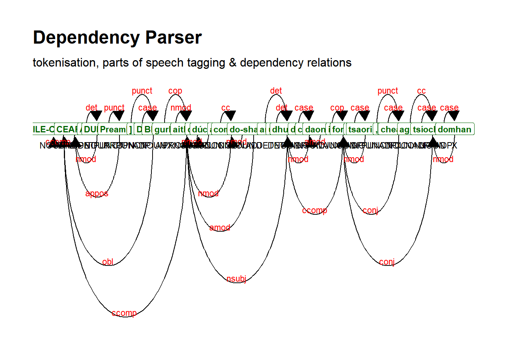
7.6.3.5.3.9 Japanese
## parse text
dat_udhr_corpus_japanese <- dat_udhr_corpus[[11]]
dat_udhr_corpus_japanese_short <- str_extract(dat_udhr_corpus_japanese, "人類社会のすべての構成員の固有の尊厳と平等で譲ることのできない権利とを承 認することは、世界における自由、正義及び平和の基礎であるので")
dat_inaug_corpus_sent_japanese <- udpipe_annotate(m_japanese, x = dat_udhr_corpus_japanese_short) %>%
as.data.frame()
## inspect
head(dat_inaug_corpus_sent_japanese)## doc_id paragraph_id sentence_id
## 1 doc1 1 1
## 2 doc1 1 1
## 3 doc1 1 1
## 4 doc1 1 1
## 5 doc1 1 1
## 6 doc1 1 1
## sentence
## 1 人類社会のすべての構成員の固有の尊厳と平等で譲ることのできない権利とを承 認することは、世界における自由、正義及び平和の基礎であるので
## 2 人類社会のすべての構成員の固有の尊厳と平等で譲ることのできない権利とを承 認することは、世界における自由、正義及び平和の基礎であるので
## 3 人類社会のすべての構成員の固有の尊厳と平等で譲ることのできない権利とを承 認することは、世界における自由、正義及び平和の基礎であるので
## 4 人類社会のすべての構成員の固有の尊厳と平等で譲ることのできない権利とを承 認することは、世界における自由、正義及び平和の基礎であるので
## 5 人類社会のすべての構成員の固有の尊厳と平等で譲ることのできない権利とを承 認することは、世界における自由、正義及び平和の基礎であるので
## 6 人類社会のすべての構成員の固有の尊厳と平等で譲ることのできない権利とを承 認することは、世界における自由、正義及び平和の基礎であるので
## token_id token lemma upos xpos feats head_token_id dep_rel deps
## 1 1 人類 人類 NOUN NN <NA> 2 compound <NA>
## 2 2 社会 社会 NOUN NN <NA> 4 nmod <NA>
## 3 3 の の ADP PN <NA> 2 case <NA>
## 4 4 すべて すべて NOUN NR <NA> 7 nmod <NA>
## 5 5 の の ADP PN <NA> 4 case <NA>
## 6 6 構成 構成 NOUN NN <NA> 7 compound <NA>
## misc
## 1 SpaceAfter=No
## 2 SpaceAfter=No
## 3 SpaceAfter=No
## 4 SpaceAfter=No
## 5 SpaceAfter=No
## 6 SpaceAfter=Nodat_inaug_corpus_sent_dplot_japanese <- textplot_dependencyparser(dat_inaug_corpus_sent_japanese, size = 3)
## show plot
dat_inaug_corpus_sent_dplot_japanese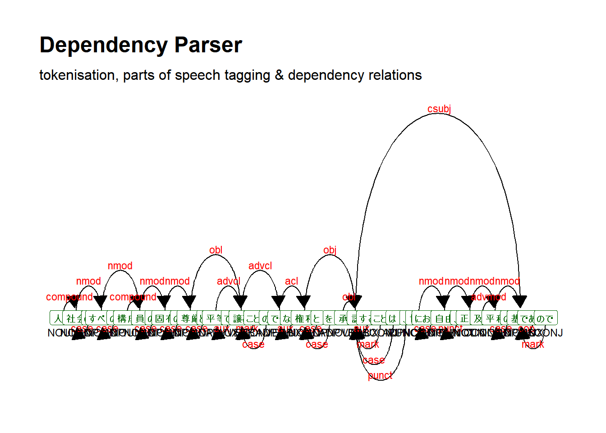
7.6.3.5.3.10 Russian
## parse text
dat_udhr_corpus_russian <- dat_udhr_corpus[[12]]
dat_udhr_corpus_russian_short <- str_extract(dat_udhr_corpus_russian, "Принимая во внимание, что признание достоинства, присущего всем\nчленам человеческой семьи, и равных и неотъемлемых прав их является основой свободы, справедливости и всеобщего мира;")
dat_inaug_corpus_sent_russian <- udpipe_annotate(m_russian, x = dat_udhr_corpus_russian_short) %>%
as.data.frame()
## inspect
head(dat_inaug_corpus_sent_russian)## doc_id paragraph_id sentence_id
## 1 doc1 1 1
## 2 doc1 1 1
## 3 doc1 1 1
## 4 doc1 1 1
## 5 doc1 1 1
## 6 doc1 1 1
## sentence
## 1 Принимая во внимание, что признание достоинства, присущего всем членам человеческой семьи, и равных и неотъемлемых прав их является основой свободы, справедливости и всеобщего мира;
## 2 Принимая во внимание, что признание достоинства, присущего всем членам человеческой семьи, и равных и неотъемлемых прав их является основой свободы, справедливости и всеобщего мира;
## 3 Принимая во внимание, что признание достоинства, присущего всем членам человеческой семьи, и равных и неотъемлемых прав их является основой свободы, справедливости и всеобщего мира;
## 4 Принимая во внимание, что признание достоинства, присущего всем членам человеческой семьи, и равных и неотъемлемых прав их является основой свободы, справедливости и всеобщего мира;
## 5 Принимая во внимание, что признание достоинства, присущего всем членам человеческой семьи, и равных и неотъемлемых прав их является основой свободы, справедливости и всеобщего мира;
## 6 Принимая во внимание, что признание достоинства, присущего всем членам человеческой семьи, и равных и неотъемлемых прав их является основой свободы, справедливости и всеобщего мира;
## token_id token lemma upos xpos
## 1 1 Принимая принимать VERB VBG
## 2 2 во во ADP IN
## 3 3 внимание внимание NOUN NN
## 4 4 , , PUNCT ,
## 5 5 что что SCONJ IN
## 6 6 признание признание NOUN NN
## feats head_token_id dep_rel deps
## 1 Aspect=Imp|Tense=Pres|VerbForm=Conv|Voice=Act 0 root <NA>
## 2 <NA> 3 case <NA>
## 3 Animacy=Inan|Case=Acc|Gender=Neut|Number=Sing 1 obl <NA>
## 4 <NA> 21 punct <NA>
## 5 <NA> 21 mark <NA>
## 6 Animacy=Inan|Case=Nom|Gender=Neut|Number=Sing 21 nsubj <NA>
## misc
## 1 <NA>
## 2 <NA>
## 3 SpaceAfter=No
## 4 <NA>
## 5 <NA>
## 6 <NA>dat_inaug_corpus_sent_dplot_russian <- textplot_dependencyparser(dat_inaug_corpus_sent_russian, size = 3)
## show plot
dat_inaug_corpus_sent_dplot_russian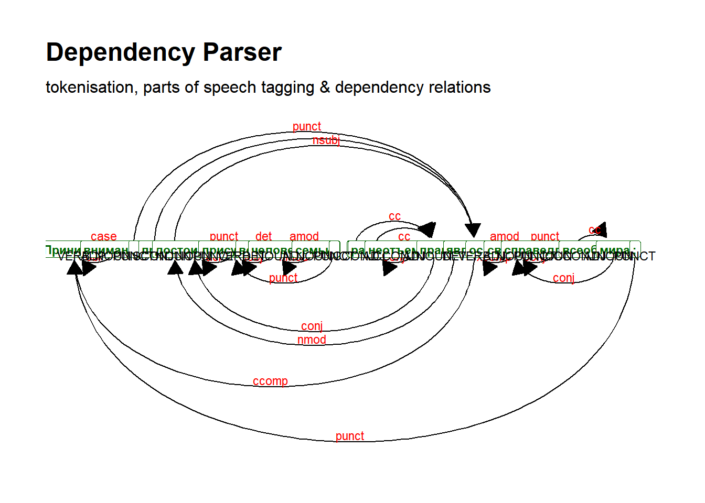
7.6.3.5.3.11 Vietnamese
## parse text
dat_inaug_corpus_sent_vietnamese <- udpipe_annotate(m_vietnamese, x = dat_udhr_corpus[[13]]) %>%
as.data.frame()
## inspect
head(dat_inaug_corpus_sent_vietnamese)## doc_id paragraph_id sentence_id
## 1 doc1 1 1
## 2 doc1 1 1
## 3 doc1 1 1
## 4 doc1 1 1
## 5 doc1 1 1
## 6 doc1 1 1
## sentence
## 1 7X\\zQ QJ{Q WR\177Q WK\u009b JL±L Y\u0098 QKyQ TX\\\u0098Q F´D /LzQ +²S 4X¬F w}²F w\u0083L KL ~©QJ /LzQ +²S 4X¬F WK{QJ TXD Y\177 F{QJ E¬ WKHR 1JK£ TX\\
## 2 7X\\zQ QJ{Q WR\177Q WK\u009b JL±L Y\u0098 QKyQ TX\\\u0098Q F´D /LzQ +²S 4X¬F w}²F w\u0083L KL ~©QJ /LzQ +²S 4X¬F WK{QJ TXD Y\177 F{QJ E¬ WKHR 1JK£ TX\\
## 3 7X\\zQ QJ{Q WR\177Q WK\u009b JL±L Y\u0098 QKyQ TX\\\u0098Q F´D /LzQ +²S 4X¬F w}²F w\u0083L KL ~©QJ /LzQ +²S 4X¬F WK{QJ TXD Y\177 F{QJ E¬ WKHR 1JK£ TX\\
## 4 7X\\zQ QJ{Q WR\177Q WK\u009b JL±L Y\u0098 QKyQ TX\\\u0098Q F´D /LzQ +²S 4X¬F w}²F w\u0083L KL ~©QJ /LzQ +²S 4X¬F WK{QJ TXD Y\177 F{QJ E¬ WKHR 1JK£ TX\\
## 5 7X\\zQ QJ{Q WR\177Q WK\u009b JL±L Y\u0098 QKyQ TX\\\u0098Q F´D /LzQ +²S 4X¬F w}²F w\u0083L KL ~©QJ /LzQ +²S 4X¬F WK{QJ TXD Y\177 F{QJ E¬ WKHR 1JK£ TX\\
## 6 7X\\zQ QJ{Q WR\177Q WK\u009b JL±L Y\u0098 QKyQ TX\\\u0098Q F´D /LzQ +²S 4X¬F w}²F w\u0083L KL ~©QJ /LzQ +²S 4X¬F WK{QJ TXD Y\177 F{QJ E¬ WKHR 1JK£ TX\\
## token_id token lemma upos xpos feats
## 1 1 7X 7X NUM M NumType=Card
## 2 2 \\zQ QJ{Q WR\177Q \\zQ QJ{Q WR\177Q NOUN N <NA>
## 3 3 WK\u009b WK\u009b NOUN N <NA>
## 4 4 JL±L JL±L DET L <NA>
## 5 5 Y\u0098 QKyQ Y\u0098 QKyQ NOUN N <NA>
## 6 6 TX TX NOUN Ny <NA>
## head_token_id dep_rel deps misc
## 1 2 nummod <NA> SpaceAfter=No
## 2 5 nsubj <NA> <NA>
## 3 2 compound <NA> <NA>
## 4 5 det <NA> <NA>
## 5 0 root <NA> <NA>
## 6 5 compound <NA> SpaceAfter=Nodat_inaug_corpus_sent_vietnamese_short <- dat_inaug_corpus_sent_vietnamese[1:26,]
dat_inaug_corpus_sent_dplot_vietnamese <- textplot_dependencyparser(dat_inaug_corpus_sent_vietnamese_short, size = 3)
## show plot
dat_inaug_corpus_sent_dplot_vietnamese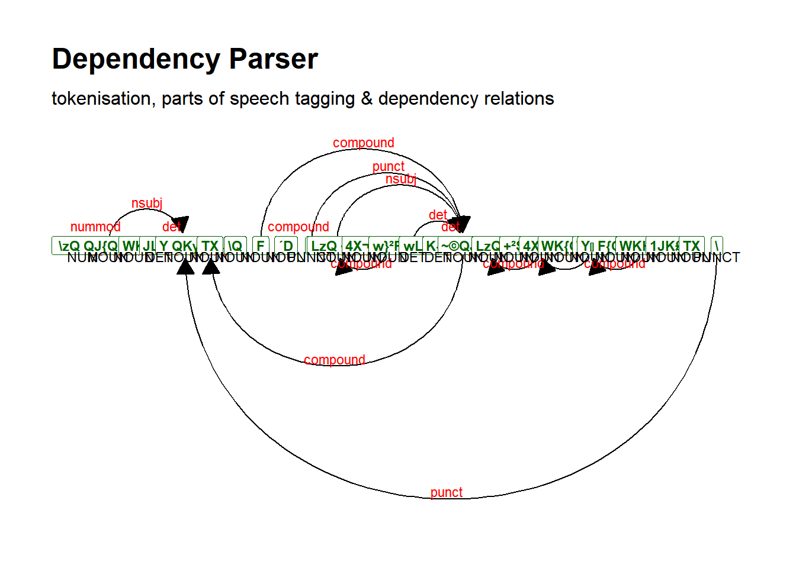
7.6.3.6 Feature co-occurrence matrix (FCM)
Feature co-occurrence matrix (FCM) records the number of co-occurrences of tokens
7.6.3.6.1 Computing number of co-occurrences
7.6.3.6.1.1 English
dat_udhr_corpus_english <- dat_udhr_corpus[[4]]
dat_udhr_corpus_english_dfmat <- dfm(tokens(dat_udhr_corpus_english, remove_punct = TRUE))
dat_udhr_corpus_english_dfmat_trim <- dfm_trim(dat_udhr_corpus_english_dfmat, min_termfreq = 10)
topfeatures_dat_udhr_corpus_english <- topfeatures(dat_udhr_corpus_english_dfmat_trim)
topfeatures_dat_udhr_corpus_english## the and of to in right be article
## 120 106 90 84 43 33 31 30
## everyone or
## 30 30## [1] 307.6.3.6.1.2 French
dat_udhr_corpus_french <- dat_udhr_corpus[[5]]
dat_udhr_corpus_french_dfmat <- dfm(tokens(dat_udhr_corpus_french, remove_punct = TRUE))
dat_udhr_corpus_french_dfmat_trim <- dfm_trim(dat_udhr_corpus_french_dfmat, min_termfreq = 10)
topfeatures_dat_udhr_corpus_french <- topfeatures(dat_udhr_corpus_french_dfmat_trim)
topfeatures_dat_udhr_corpus_french## de et la à des droit le a les article
## 134 90 79 61 42 41 36 32 31 30## [1] 347.6.3.6.2 Features co-occurrences
7.6.3.6.2.1 English
dat_udhr_corpus_english_fcmat <- fcm(dat_udhr_corpus_english_dfmat_trim)
dat_udhr_corpus_english_fcmat## Feature co-occurrence matrix of: 30 by 30 features.
## features
## features of human rights the and equal all is freedom in
## of 4005 1170 1980 10800 9540 990 1080 1170 990 3870
## human 0 78 286 1560 1378 143 156 169 143 559
## rights 0 0 231 2640 2332 242 264 286 242 946
## the 0 0 0 7140 12720 1320 1440 1560 1320 5160
## and 0 0 0 0 5565 1166 1272 1378 1166 4558
## equal 0 0 0 0 0 55 132 143 121 473
## all 0 0 0 0 0 0 66 156 132 516
## is 0 0 0 0 0 0 0 78 143 559
## freedom 0 0 0 0 0 0 0 0 55 473
## in 0 0 0 0 0 0 0 0 0 903
## [ reached max_feat ... 20 more features, reached max_nfeat ... 20 more features ]7.6.3.6.2.2 French
dat_udhr_corpus_french_fcmat <- fcm(dat_udhr_corpus_french_dfmat_trim, context = "document")
dat_udhr_corpus_french_fcmat## Feature co-occurrence matrix of: 34 by 34 features.
## features
## features des droits de l'homme que la à tous les et
## des 861 924 5628 420 840 3318 2562 588 1302 3780
## droits 0 231 2948 220 440 1738 1342 308 682 1980
## de 0 0 8911 1340 2680 10586 8174 1876 4154 12060
## l'homme 0 0 0 45 200 790 610 140 310 900
## que 0 0 0 0 190 1580 1220 280 620 1800
## la 0 0 0 0 0 3081 4819 1106 2449 7110
## à 0 0 0 0 0 0 1830 854 1891 5490
## tous 0 0 0 0 0 0 0 91 434 1260
## les 0 0 0 0 0 0 0 0 465 2790
## et 0 0 0 0 0 0 0 0 0 4005
## [ reached max_feat ... 24 more features, reached max_nfeat ... 24 more features ]You can test it on the other languages